Last updated: 2026-09-18
Checks: 7 0
Knit directory: misc/analysis/
This reproducible R Markdown analysis was created with workflowr (version 1.7.2). The Checks tab describes the reproducibility checks that were applied when the results were created. The Past versions tab lists the development history.
Great! Since the R Markdown file has been committed to the Git repository, you know the exact version of the code that produced these results.
Great job! The global environment was empty. Objects defined in the global environment can affect the analysis in your R Markdown file in unknown ways. For reproduciblity it’s best to always run the code in an empty environment.
The command set.seed(1) was run prior to running the code in the R Markdown file. Setting a seed ensures that any results that rely on randomness, e.g. subsampling or permutations, are reproducible.
Great job! Recording the operating system, R version, and package versions is critical for reproducibility.
Nice! There were no cached chunks for this analysis, so you can be confident that you successfully produced the results during this run.
Great job! Using relative paths to the files within your workflowr project makes it easier to run your code on other machines.
Great! You are using Git for version control. Tracking code development and connecting the code version to the results is critical for reproducibility.
The results in this page were generated with repository version 0b55467. See the Past versions tab to see a history of the changes made to the R Markdown and HTML files.
Note that you need to be careful to ensure that all relevant files for the analysis have been committed to Git prior to generating the results (you can use wflow_publish or wflow_git_commit). workflowr only checks the R Markdown file, but you know if there are other scripts or data files that it depends on. Below is the status of the Git repository when the results were generated:
Ignored files:
Ignored: .DS_Store
Ignored: .Rhistory
Ignored: .Rproj.user/
Ignored: .claude/
Ignored: GSE87571/
Ignored: analysis/.RData
Ignored: analysis/.Rhistory
Ignored: analysis/ALStruct_cache/
Ignored: analysis/binary_quad_comparison_cache/
Ignored: analysis/ebproj_01.html
Ignored: analysis/gset_G63_cache/
Ignored: data/.Rhistory
Ignored: data/hgdp_hap_matrix.rds
Ignored: data/methylation-data-for-matthew.rds
Ignored: data/pbmc/
Ignored: data/pbmc_purified.RData
Ignored: data/refGene_hg19.txt.gz
Ignored: data/tgp_data_matrix.rds
Ignored: data/tgp_meta.rds
Ignored: output/admixture/
Untracked files:
Untracked: .dropbox
Untracked: GSE41037/
Untracked: Icon
Untracked: Rplots.pdf
Untracked: analysis/GHstan.Rmd
Untracked: analysis/GTEX-cogaps.Rmd
Untracked: analysis/PACS.Rmd
Untracked: analysis/Rplot.png
Untracked: analysis/Rplots.pdf
Untracked: analysis/SPCAvRP.rmd
Untracked: analysis/abf_comparisons.Rmd
Untracked: analysis/admm_02.Rmd
Untracked: analysis/admm_03.Rmd
Untracked: analysis/binary_quad_comparison.Rmd
Untracked: analysis/bispca.Rmd
Untracked: analysis/cache/
Untracked: analysis/cholesky.Rmd
Untracked: analysis/compare-transformed-models.Rmd
Untracked: analysis/cormotif.Rmd
Untracked: analysis/cp_ash.Rmd
Untracked: analysis/eQTL.perm.rand.pdf
Untracked: analysis/eb_power2.Rmd
Untracked: analysis/eb_prepilot.Rmd
Untracked: analysis/eb_var.Rmd
Untracked: analysis/ebpmf1.Rmd
Untracked: analysis/ebpmf_sla_text.Rmd
Untracked: analysis/ebproj_01.Rmd
Untracked: analysis/ebproj_newton.Rmd
Untracked: analysis/ebspca_sims.Rmd
Untracked: analysis/explore_psvd.Rmd
Untracked: analysis/fa_check_identify.Rmd
Untracked: analysis/fa_iterative.Rmd
Untracked: analysis/fastica_1kg_unwhitened.Rmd
Untracked: analysis/fastica_heated.Rmd
Untracked: analysis/fastica_unwhitened.Rmd
Untracked: analysis/fastica_unwhitened_optim.Rmd
Untracked: analysis/flash_cov_overlapping_groups_init.Rmd
Untracked: analysis/flash_test_tree.Rmd
Untracked: analysis/flashier_newgroups.Rmd
Untracked: analysis/flashier_nmf_triples.Rmd
Untracked: analysis/flashier_pbmc.Rmd
Untracked: analysis/flashier_snn_shifted_prior.Rmd
Untracked: analysis/greedy_ebpmf_exploration_00.Rmd
Untracked: analysis/gset_G63.Rmd
Untracked: analysis/ieQTL.perm.rand.pdf
Untracked: analysis/lasso_em_03.Rmd
Untracked: analysis/m6amash.Rmd
Untracked: analysis/mash_bhat_z.Rmd
Untracked: analysis/mash_ieqtl_permutations.Rmd
Untracked: analysis/matrix_beta.Rmd
Untracked: analysis/meth_flash_01.Rmd
Untracked: analysis/methylation_example.Rmd
Untracked: analysis/mixsqp.Rmd
Untracked: analysis/mr.ash_lasso_init.Rmd
Untracked: analysis/mr.mash.test.Rmd
Untracked: analysis/mr_ash_modular.Rmd
Untracked: analysis/mr_ash_parameterization.Rmd
Untracked: analysis/mr_ash_ridge.Rmd
Untracked: analysis/mv_gaussian_message_passing.Rmd
Untracked: analysis/nejm.Rmd
Untracked: analysis/nmf_bg.Rmd
Untracked: analysis/nonneg_underapprox.Rmd
Untracked: analysis/normal_conditional_on_r2.Rmd
Untracked: analysis/normalize.Rmd
Untracked: analysis/pbmc.Rmd
Untracked: analysis/pca_binary_weighted.Rmd
Untracked: analysis/pca_l1.Rmd
Untracked: analysis/poisson_nmf_approx.Rmd
Untracked: analysis/poisson_shrink.Rmd
Untracked: analysis/poisson_transform.Rmd
Untracked: analysis/qrnotes.txt
Untracked: analysis/ridge_iterative_02.Rmd
Untracked: analysis/ridge_iterative_splitting.Rmd
Untracked: analysis/samps/
Untracked: analysis/sc_bimodal.Rmd
Untracked: analysis/shrinkage_comparisons_changepoints.Rmd
Untracked: analysis/susie_cov.Rmd
Untracked: analysis/susie_en.Rmd
Untracked: analysis/susie_z_investigate.Rmd
Untracked: analysis/svd-timing.Rmd
Untracked: analysis/temp.RDS
Untracked: analysis/temp.Rmd
Untracked: analysis/test-figure/
Untracked: analysis/test.Rmd
Untracked: analysis/test.Rpres
Untracked: analysis/test.md
Untracked: analysis/test_qr.R
Untracked: analysis/test_sparse.Rmd
Untracked: analysis/tree_dist_top_eigenvector.Rmd
Untracked: analysis/z.txt
Untracked: code/coordinate_descent_symNMF.R
Untracked: code/multivariate_testfuncs.R
Untracked: code/rqb.hacked.R
Untracked: code/write_plink_bed.R
Untracked: data/4matthew/
Untracked: data/4matthew2/
Untracked: data/E-MTAB-2805.processed.1/
Untracked: data/ENSG00000156738.Sim_Y2.RDS
Untracked: data/G63
Untracked: data/GDS5363_full.soft.gz
Untracked: data/GSE41265_allGenesTPM.txt
Untracked: data/Muscle_Skeletal.ACTN3.pm1Mb.RDS
Untracked: data/P.rds
Untracked: data/Thyroid.FMO2.pm1Mb.RDS
Untracked: data/bmass.HaemgenRBC2016.MAF01.Vs2.MergedDataSources.200kRanSubset.ChrBPMAFMarkerZScores.vs1.txt.gz
Untracked: data/bmass.HaemgenRBC2016.Vs2.NewSNPs.ZScores.hclust.vs1.txt
Untracked: data/bmass.HaemgenRBC2016.Vs2.PreviousSNPs.ZScores.hclust.vs1.txt
Untracked: data/eb_prepilot/
Untracked: data/finemap_data/fmo2.sim/b.txt
Untracked: data/finemap_data/fmo2.sim/dap_out.txt
Untracked: data/finemap_data/fmo2.sim/dap_out2.txt
Untracked: data/finemap_data/fmo2.sim/dap_out2_snp.txt
Untracked: data/finemap_data/fmo2.sim/dap_out_snp.txt
Untracked: data/finemap_data/fmo2.sim/data
Untracked: data/finemap_data/fmo2.sim/fmo2.sim.config
Untracked: data/finemap_data/fmo2.sim/fmo2.sim.k
Untracked: data/finemap_data/fmo2.sim/fmo2.sim.k4.config
Untracked: data/finemap_data/fmo2.sim/fmo2.sim.k4.snp
Untracked: data/finemap_data/fmo2.sim/fmo2.sim.ld
Untracked: data/finemap_data/fmo2.sim/fmo2.sim.snp
Untracked: data/finemap_data/fmo2.sim/fmo2.sim.z
Untracked: data/finemap_data/fmo2.sim/pos.txt
Untracked: data/logm.csv
Untracked: data/m.cd.RDS
Untracked: data/m.cdu.old.RDS
Untracked: data/m.new.cd.RDS
Untracked: data/m.old.cd.RDS
Untracked: data/mainbib.bib.old
Untracked: data/mat.csv
Untracked: data/mat.txt
Untracked: data/mat_new.csv
Untracked: data/matrix_lik.rds
Untracked: data/paintor_data/
Untracked: data/running_data_chris.csv
Untracked: data/running_data_matthew.csv
Untracked: data/temp.txt
Untracked: data/y.txt
Untracked: data/y_f.txt
Untracked: data/zscore_jointLCLs_m6AQTLs_susie_eQTLpruned.rds
Untracked: data/zscore_jointLCLs_random.rds
Untracked: explore_udi.R
Untracked: output/fit.k10.rds
Untracked: output/fit.nn.pbmc.purified.rds
Untracked: output/fit.nn.rds
Untracked: output/fit.nn.s.001.rds
Untracked: output/fit.nn.s.01.rds
Untracked: output/fit.nn.s.1.rds
Untracked: output/fit.nn.s.10.rds
Untracked: output/fit.snn.s.001.rds
Untracked: output/fit.snn.s.01.nninit.rds
Untracked: output/fit.snn.s.01.rds
Untracked: output/fit.varbvs.RDS
Untracked: output/fit2.nn.pbmc.purified.rds
Untracked: output/glmnet.fit.RDS
Untracked: output/snn07.txt
Untracked: output/snn34.txt
Untracked: output/test.bv.txt
Untracked: output/test.gamma.txt
Untracked: output/test.hyp.txt
Untracked: output/test.log.txt
Untracked: output/test.param.txt
Untracked: output/test2.bv.txt
Untracked: output/test2.gamma.txt
Untracked: output/test2.hyp.txt
Untracked: output/test2.log.txt
Untracked: output/test2.param.txt
Untracked: output/test3.bv.txt
Untracked: output/test3.gamma.txt
Untracked: output/test3.hyp.txt
Untracked: output/test3.log.txt
Untracked: output/test3.param.txt
Untracked: output/test4.bv.txt
Untracked: output/test4.gamma.txt
Untracked: output/test4.hyp.txt
Untracked: output/test4.log.txt
Untracked: output/test4.param.txt
Untracked: output/test5.bv.txt
Untracked: output/test5.gamma.txt
Untracked: output/test5.hyp.txt
Untracked: output/test5.log.txt
Untracked: output/test5.param.txt
Unstaged changes:
Modified: analysis/eb_snmu.Rmd
Modified: analysis/ebnm_binormal.Rmd
Modified: analysis/ebpower.Rmd
Modified: analysis/fastica_asymmetric_03.Rmd
Modified: analysis/fastica_bm_spd.Rmd
Modified: analysis/flashier_log1p.Rmd
Modified: analysis/flashier_sla_text.Rmd
Modified: analysis/logistic_z_scores.Rmd
Modified: analysis/mr_ash_pen.Rmd
Modified: analysis/nmu_em.Rmd
Modified: analysis/susie_flash.Rmd
Modified: analysis/tap_free_energy.Rmd
Modified: misc.Rproj
Note that any generated files, e.g. HTML, png, CSS, etc., are not included in this status report because it is ok for generated content to have uncommitted changes.
These are the previous versions of the repository in which changes were made to the R Markdown (analysis/fastica_hgdp.Rmd) and HTML (docs/fastica_hgdp.html) files. If you’ve configured a remote Git repository (see ?wflow_git_remote), click on the hyperlinks in the table below to view the files as they were in that past version.
| File | Version | Author | Date | Message |
|---|---|---|---|---|
| Rmd | 0b55467 | Matthew Stephens | 2026-09-18 | Check relatedness in the HGDP samples, and correct the pruning section |
| html | c54cd5b | Matthew Stephens | 2026-09-18 | Build site. |
| Rmd | fbe04d3 | Matthew Stephens | 2026-09-18 | Add fastICA x|x| analysis of HGDP haplotypes |
This repeats the analysis of fastica_1kg — fastICA with the asymmetric \(G(x) = x|x|\) contrast — on the Human Genome Diversity Panel whole-genome data, and uses the recipe that analysis arrived at rather than rediscovering it:
The 1000 Genomes analysis reached that recipe the long way round. Its lesson was that a single rank-\(r\) fit is the unreliable step — it can lose a real factor to a bad local optimum — while the rank-1 searches say directly which directions are genuine maxima.
It also pruned the data: a small number of related individuals and sample outliers dominated very sparse factors there, and dropping 40 of 2504 reorganized the whole landscape. That step turns out not to be needed here, so the analysis below uses every individual. The evidence is kept in one short section rather than run through the whole document. Part of the reason is that these 929 samples contain no duplicates and no first-degree relative pairs at all (checked below), so the relative pairs that dominated the sparse 1000 Genomes factors are simply not present; and part is that HGDP populations are small and drifted enough that a genuine population factor is already narrow and sharp.
Two things differ from the 1000 Genomes setting. HGDP is smaller and much more finely sampled — 929 individuals from 54 populations in 7 regions, against 2504 from 26 populations — so there are far more populations than components. And the data are statistically phased, so we work with the \(2 \times 929 = 1858\) haplotypes as rows rather than with individuals.
library(ggplot2)
library(cowplot)
library(fastTopics)
meta <- readRDS("../data/hgdp_meta.rds")
fit <- readRDS("../output/hgdp_fastica.rds")
struct <- readRDS("../output/hgdp_structure.rds")
kin <- readRDS("../output/hgdp_kinship.rds")
region_palette <- c(AFRICA = "#E69F00",
MIDDLE_EAST = "#D55E00",
EUROPE = "#7570B3",
CENTRAL_SOUTH_ASIA = "#1B9E77",
EAST_ASIA = "#0072B2",
OCEANIA = "#CC79A7",
AMERICA = "#332288")
# One row of metadata per haplotype, in the row order of the fits.
hap_meta <- function(ids) {
m <- meta[match(sub("_[12]$", "", ids), meta$sample), ]
m$hap <- ids
m
}
hm <- hap_meta(fit$hap_ids)
pop_order <- levels(meta$pop)
skew_obj <- function(L) colMeans(L * abs(L))The genotypes are the statistically phased autosomal VCF from the HGDP WGS release (GRCh38, 929 samples), and the sample table is the metadata file from the same release. That VCF is 5.9 Gb compressed and has tens of millions of variants, so code/vcf_thin.c streams it once and keeps a thinned subset: biallelic PASS SNPs with an AA_ensembl ancestral allele matching one of the two alleles, no missing call in any sample, derived-allele frequency in \([0.05, 0.95]\), and at least 6 kb from the previous SNP kept on that chromosome. Each kept SNP is written as 1858 derived-allele indicators, one per haplotype.
Distance thinning is a cruder stand-in for LD pruning than the \(r^2\) pruning behind the 1000 Genomes matrix, but it costs one pass over the file instead of several. The 6 kb spacing is not a tuned choice, and the last section checks what it buys: halving it from 12 kb, which doubles the SNP count, leaves every maximum in place at \(r \ge 0.98\).
code/prep_hgdp_data.R turns that into data/hgdp_hap_matrix.rds, and code/fit_hgdp_fastica.R does everything below. As in the TGP script the columns are centred and nothing else is done to them — no division by \(\sqrt{2p(1-p)}\) — and the left singular vectors come from the \(1858 \times 1858\) centred Gram matrix rather than from an SVD of the centred data.
c(haplotypes = length(fit$hap_ids), individuals = nrow(meta),
SNPs = fit$nsnp, populations = nlevels(meta$pop), regions = nlevels(meta$region)) haplotypes individuals SNPs populations regions
1858 929 215468 54 7 table(meta$region)
AFRICA MIDDLE_EAST EUROPE CENTRAL_SOUTH_ASIA
104 161 155 197
EAST_ASIA OCEANIA AMERICA
223 28 61 ggplot(data.frame(k = 1:60, d = fit$d[1:60]), aes(k, d)) +
geom_point(size = 1.2) +
geom_vline(xintercept = fit$K, linetype = "dashed", colour = "dodgerblue") +
scale_x_continuous(breaks = c(1, 10, 20, 30, 40, 50, 60)) +
labs(x = "component", y = "singular value") +
theme_cowplot(font_size = 10)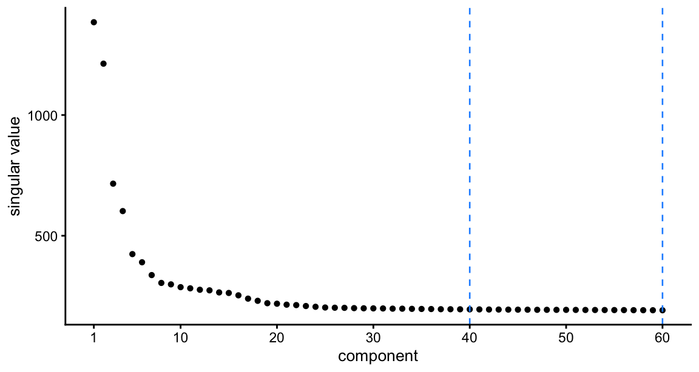
| Version | Author | Date |
|---|---|---|
| c54cd5b | Matthew Stephens | 2026-09-18 |
round(fit$d[1:20]) [1] 1384 1213 716 602 424 390 337 305 299 287 282 276 274 265 263
[16] 253 239 230 221 218The first four are well separated — Africa, then Oceania and the Americas — and from about the tenth the spectrum is a slow decline with no elbow, so \(K\) is a choice about how many sources we are willing to look for rather than a dimension the data hand us — which is why both 40 and 60 are tried. With 54 populations there are fewer components than populations at \(K = 40\), the opposite of the 1000 Genomes setting (30 components, 26 populations), and that is worth keeping in mind below.
# Order factors so they roughly follow the (geographic) population order: each
# factor takes the mean population rank of the haplotypes it loads on, weighted
# by pmax(L,0)^2 so only the large positive loadings count.
pop_order_of <- function(L, m) {
w <- pmax(L, 0)^2
order(colSums(w * as.integer(m$pop)) / colSums(w))
}
# Populations carrying a factor: those whose mean loading is within `frac` of
# the largest. Capped at `top` names so that panel strips stay readable --- a
# factor spread over more than a few populations gets a trailing "+".
pop_label <- function(x, m, frac = 0.3, top = 3) {
v <- tapply(x, m$pop, mean)
v <- sort(v[v > 0], decreasing = TRUE)
v <- names(v)[v >= frac * v[1]]
paste0(paste(head(v, top), collapse = "/"), if (length(v) > top) "+" else "")
}
# Factors are referred to by short names (f01, f02, ...) everywhere, with the
# populations, objective, basin size and sparsity kept in a companion table.
name_maxima <- function(L, m, n_rand) {
o <- pop_order_of(L, m)
L <- L[, o, drop = FALSE]
colnames(L) <- sprintf("f%02d", seq_len(ncol(L)))
list(L = L,
tab = data.frame(factor = colnames(L),
pops = apply(L, 2, pop_label, m = m),
obj = round(skew_obj(L), 2),
n_above2 = colSums(L > 2),
max_loading = round(apply(L, 2, max), 1),
rand_starts = n_rand[o],
row.names = NULL))
}
# Loadings of every haplotype, x-axis grouped by sampling population.
plot_loadings <- function(L, m, tab, ncol = 2) {
ord <- order(m$pop)
nf <- ncol(L)
strip <- sprintf("%s %s n=%d", colnames(L), tab$pops, tab$n_above2)
df <- data.frame(
idx = rep(seq_len(nrow(L)), nf),
loading = as.vector(L[ord, ]),
region = rep(m$region[ord], nf),
factor = factor(rep(strip, each = nrow(L)), levels = strip))
brk <- tapply(seq_along(ord), m$pop[ord], mean)
ggplot(df, aes(idx, loading, colour = region)) +
geom_hline(yintercept = 0, linewidth = 0.2, colour = "grey50") +
geom_point(size = 0.35, alpha = 0.7) +
facet_wrap(~ factor, ncol = ncol, scales = "free_y") +
# Population positions are haplotype indices, so the small populations sit
# very close together; dodging the labels over two rows stops them
# colliding without moving any point.
scale_x_continuous(breaks = brk, labels = names(brk), expand = c(0.01, 0),
guide = guide_axis(n.dodge = 2)) +
scale_colour_manual(values = region_palette) +
labs(x = NULL, y = "loading", colour = "region") +
theme_cowplot(font_size = 9) +
theme(axis.text.x = element_text(angle = 90, vjust = 0.5, hjust = 1,
size = 5.5),
strip.text = element_text(size = 7),
legend.position = "bottom") +
guides(colour = guide_legend(override.aes = list(size = 3, alpha = 1),
nrow = 1))
}
# Population-mean loadings as a heatmap, populations in geographic order.
plot_pop_heatmap <- function(L, m) {
M <- apply(L, 2, function(x) tapply(x, m$pop, mean))
df <- data.frame(
pop = factor(rep(rownames(M), ncol(M)), levels = rev(pop_order)),
factor = factor(rep(colnames(M), each = nrow(M)), levels = colnames(M)),
value = as.vector(M))
# A few isolated populations (San, Surui) load an order of magnitude higher
# than anything else, so a full-range scale renders every broad factor as
# white. Clip the scale at the 98th percentile and squish the rest.
lim <- as.numeric(quantile(abs(df$value), 0.98))
ggplot(df, aes(factor, pop, fill = value)) +
geom_tile() +
scale_fill_gradient2(low = "#2166AC", mid = "white", high = "#B2182B",
limits = c(-lim, lim), oob = scales::squish) +
labs(x = NULL, y = NULL, fill = "mean\nloading") +
theme_cowplot(font_size = 9) +
theme(axis.text.x = element_text(angle = 90, vjust = 0.5, size = 6),
axis.text.y = element_text(size = 5.5))
}As in the 1000 Genomes analysis we run 1000 independent rank-1 fastICA runs in parallel — one column of W per run, each renormalized to unit length after every update, with no orthogonalization between them — from random starts in the \(K = 40\) whitened space. What the runs converge to are the local maxima of the objective, and the number of runs landing in each is a rough measure of its basin of attraction. Runs that found the same maximum are merged by clustering on signed correlation with complete linkage; the correlation is signed, not absolute, because \(x|x|\) is not sign-symmetric and \(w\) and \(-w\) are genuinely different solutions.
mx <- fit$fits$k40$maxima
c(largest_change_last_iter = signif(mx$converged, 3))largest_change_last_iter
7.77e-16 # Number of distinct maxima if we cut the tree at correlation 0.90 / 0.95 / 0.99.
mx$n_cut[1] 25 25 25c(n_maxima = ncol(mx$L),
found_by_random_starts = sum(mx$n_random > 0),
found_only_from_rank_r = sum(mx$n_random == 0)) n_maxima found_by_random_starts found_only_from_rank_r
25 17 8 r1 <- name_maxima(mx$L, hm, mx$n_random)
L_r1 <- r1$L
r1$tab factor pops obj n_above2 max_loading rand_starts
1 f01 Mandenka/Yoruba 0.85 89 6.5 5
2 f02 Biaka 0.93 44 7.4 47
3 f03 San 0.96 20 12.4 205
4 f04 Mbuti 0.95 26 8.8 127
5 f05 Mozabite 0.88 52 6.9 18
6 f06 Bedouin 0.88 42 8.2 14
7 f07 Bedouin 0.75 15 13.5 5
8 f08 Druze 0.85 64 9.7 8
9 f09 Palestinian 0.76 69 7.9 3
10 f10 Basque 0.72 49 6.9 0
11 f11 Sardinian 0.73 57 6.1 0
12 f12 Russian/Orcadian/French+ 0.68 121 4.6 0
13 f13 Brahui/Makrani/Balochi+ 0.69 143 5.1 0
14 f14 Hazara 0.60 24 13.2 0
15 f15 Kalash 0.91 44 7.5 34
16 f16 Burusho/Pathan/Sindhi 0.69 91 5.8 0
17 f17 Lahu/Dai/Cambodian+ 0.71 110 7.0 0
18 f18 Japanese/Hezhen/Daur+ 0.58 96 4.3 0
19 f19 Yakut/Oroqen 0.81 69 6.4 1
20 f20 PapuanHighlands/PapuanSepik 0.94 34 7.7 89
21 f21 Bougainville 0.94 22 10.0 116
22 f22 Pima 0.92 26 10.0 55
23 f23 Colombian/Maya 0.87 58 7.4 6
24 f24 Karitiana 0.94 22 9.9 114
25 f25 Surui 0.94 16 11.8 153The clustering is not sensitive to where we cut — the same number of maxima at a correlation of 0.90, 0.95 and 0.99 — so these are well-separated solutions, not a continuum.
The striking thing, against the 1000 Genomes result, is that almost every maximum is a population factor. There is no analogue of the GIH trio that took 307 of 1000 starts there, and no relative-pair factors at all in this list. The only exceptions are the second Bedouin factor and the Hazara factor, each loading on five or six individuals at up to 13, and both are taken up in the next section. Everything else is a population, a pair of neighbouring populations, or a regional cluster, and the ordering runs cleanly from Africa through the Middle East, Europe, Central/South Asia and East Asia to Oceania and the Americas.
plot_loadings(L_r1, hm, r1$tab)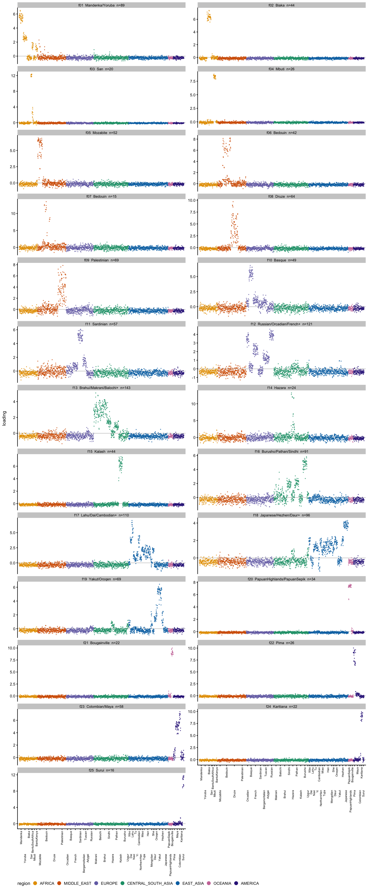
| Version | Author | Date |
|---|---|---|
| c54cd5b | Matthew Stephens | 2026-09-18 |
plot_pop_heatmap(L_r1, hm)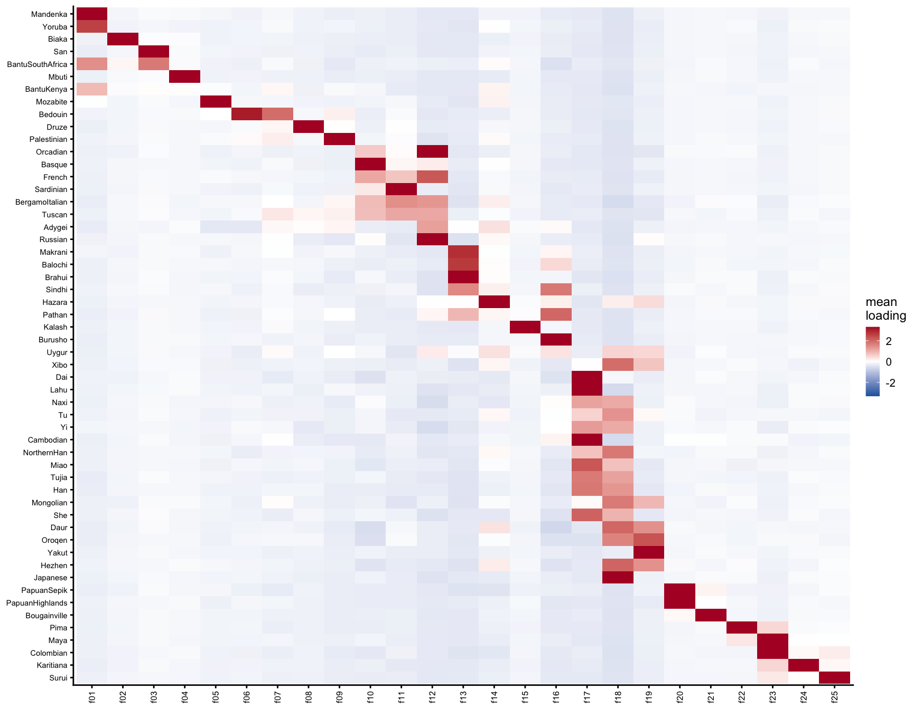
| Version | Author | Date |
|---|---|---|
| c54cd5b | Matthew Stephens | 2026-09-18 |
df <- data.frame(size = r1$tab$rand_starts, obj = skew_obj(L_r1))
ggplot(df, aes(size, obj)) + geom_point(size = 1.4) +
labs(x = "random starts reaching this maximum", y = "objective") +
theme_cowplot(font_size = 10)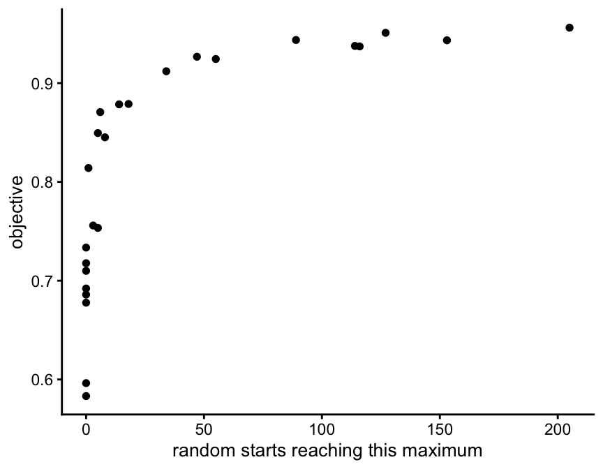
| Version | Author | Date |
|---|---|---|
| c54cd5b | Matthew Stephens | 2026-09-18 |
round(cor(df$size, df$obj), 2)[1] 0.71Basin size and objective are more strongly related here than in the 1000 Genomes data (0.39 there), but the relationship is still not one a search could rely on. The pattern behind it is geographic rather than numerical: the maxima with large basins are the isolated, strongly drifted populations — San, Surui, Karitiana, Mbuti, the Papuan groups, Bougainville, Pima — and the ones random starts almost never reach are the broad, shallow factors spanning many related populations, such as Russian/Orcadian/French, Brahui/Makrani/Balochi, Burusho/Pathan/Sindhi and Japanese/Hezhen/Daur. Those have basins of zero: they are found only by starting rank-1 at the corresponding rank-\(r\) factor.
data.frame(factor = colnames(L_r1), pops = r1$tab$pops,
obj = r1$tab$obj)[r1$tab$rand_starts == 0, ] factor pops obj
10 f10 Basque 0.72
11 f11 Sardinian 0.73
12 f12 Russian/Orcadian/French+ 0.68
13 f13 Brahui/Makrani/Balochi+ 0.69
14 f14 Hazara 0.60
16 f16 Burusho/Pathan/Sindhi 0.69
17 f17 Lahu/Dai/Cambodian+ 0.71
18 f18 Japanese/Hezhen/Daur+ 0.58This is the same lesson as in the 1000 Genomes analysis, and it is the reason for running the rank-\(r\) fit at all: 1000 random rank-1 starts, on their own, would miss 8 of the 25 maxima, including most of the broad continental ones.
In the 1000 Genomes data a handful of related individuals and sample outliers dominated very sparse factors, and removing them reorganized the landscape: 17 maxima became 14, three maxima that random starts could never reach became reachable, and a new composite factor appeared. Here almost none of that happens, and this section is the check.
The 1000 Genomes rule — “fewer than 20 individuals load above 2” — does not transfer, and this is worth recording because applying it unchanged does real damage. Every 1000 Genomes population has 60–100 individuals, so nothing that narrow could be a population; HGDP populations run from 6 to 46, and a bare count deletes whole populations — San (6), Colombian (7), Surui (8) and Mbuti (13) each have their own maximum and each looks “very sparse” by that rule. Run as written it drops three entire populations and loses their factors, while the fit converges just as cleanly and still reports a tidy list.
So the test is made relative to population size. A maximum is screened in if it is narrow — fewer than 40 haplotypes load above 2 — and judged a nuisance only if the individuals it singles out (loading above 5 on either haplotype) are less than 0.5 of the population most of them belong to. frac is the column that does the work: the whole-population maxima sit at 0.92–1.00 and the within-population ones at 0.13–0.36, with nothing in between.
pc <- fit$prune_check
st <- pc$screen_tab
st$verdict <- ifelse(st$frac < pc$sparse_fracmax, "within-population",
"whole population")
st[order(st$frac), ] n_individuals top_pop n_in_pop pop_size frac obj n_above2
8 6 Bedouin 6 46 0.13 0.74 15
22 6 Bedouin 6 46 0.13 0.75 15
14 4 Makrani 4 25 0.16 0.52 25
4 8 Druze 8 42 0.19 0.63 33
12 5 Hazara 5 19 0.26 0.59 23
23 5 Hazara 5 19 0.26 0.60 24
9 4 BantuKenya 4 11 0.36 0.68 32
7 11 Karitiana 11 12 0.92 0.91 22
16 11 Karitiana 11 12 0.92 0.94 22
1 11 Bougainville 11 11 1.00 0.92 22
2 17 PapuanHighlands 9 9 1.00 0.91 34
3 8 Lahu 8 8 1.00 0.61 23
5 8 Surui 8 8 1.00 0.93 16
6 13 Mbuti 13 13 1.00 0.93 26
10 13 Pima 13 13 1.00 0.90 26
11 6 San 6 6 1.00 0.94 19
13 7 Colombian 7 7 1.00 0.68 17
15 6 San 6 6 1.00 0.96 20
17 13 Mbuti 13 13 1.00 0.95 26
18 17 PapuanHighlands 9 9 1.00 0.94 34
19 13 Pima 13 13 1.00 0.92 26
20 8 Surui 8 8 1.00 0.94 16
21 11 Bougainville 11 11 1.00 0.94 22
verdict
8 within-population
22 within-population
14 within-population
4 within-population
12 within-population
23 within-population
9 within-population
7 whole population
16 whole population
1 whole population
2 whole population
3 whole population
5 whole population
6 whole population
10 whole population
11 whole population
13 whole population
15 whole population
17 whole population
18 whole population
19 whole population
20 whole population
21 whole populationNote the objective alone would not have separated these: the within-population maxima score 0.52–0.75 and the whole-population ones 0.61–0.96, which overlap. It is the fraction, not the sharpness.
c(individuals_dropped = length(pc$dropped),
individuals_left = nrow(meta) - length(pc$dropped),
maxima_before = ncol(fit$fits$k40$maxima$L),
maxima_after = ncol(pc$maxima$L))individuals_dropped individuals_left maxima_before maxima_after
27 902 25 23 table(droplevels(meta$pop[match(pc$dropped, meta$sample)]))
BantuKenya Bedouin Druze Makrani Hazara
4 6 8 4 5 Twenty-seven individuals in five clusters of 4–8, from BantuKenya, Bedouin, Druze, Makrani and Hazara.
The obvious reading, and the one the 1000 Genomes analysis would suggest, is that clusters that size and that sharp are close relatives. On these data that is mostly wrong, which is worth establishing rather than assuming. code/fit_hgdp_kinship.R computes KING-robust kinship for all 431,056 pairs from the same SNPs.
kin$counts
dup/MZ 1st 2nd 3rd unrelated
0 0 20 69 430967 There are no duplicates and no first-degree pairs among the 929. That is itself informative: the full HGDP-CEPH panel of 1064 needs 77 individuals removed to reach that state (Rosenberg 2006 defines the nested clean subsets H1048, H971 and H952 for exactly this purpose), so these samples must come from a relatedness-aware starting set, even though the sequencing paper’s supplement documents its QC in terms of coverage, error rates, array concordance and cell-line artefacts rather than relatedness. Twenty pairs sit in the second-degree band and 69 in the third, and they are concentrated in Surui, Karitiana, Pima and Bougainville — the smallest and most drifted populations, where KING-robust is inflated by background relatedness and a “second-degree” call need not be a pedigree relationship.
Against that background, here is the maximum kinship of each dropped individual to anyone in the panel:
dm <- data.frame(sample = pc$dropped,
pop = as.character(meta$pop[match(pc$dropped, meta$sample)]),
max_kinship = round(kin$max_kinship[pc$dropped], 3))
aggregate(max_kinship ~ pop, dm, function(x)
c(n = length(x), max = max(x), median = median(x))) pop max_kinship.n max_kinship.max max_kinship.median
1 BantuKenya 4.0000 0.1210 0.0895
2 Bedouin 6.0000 0.0370 0.0280
3 Druze 8.0000 0.0770 0.0525
4 Hazara 5.0000 0.0840 0.0550
5 Makrani 4.0000 0.0340 0.0275Only the BantuKenya cluster is clearly relatedness (0.121, second degree). Hazara reaches 0.084 and Druze 0.077, both third-degree at best. Bedouin (0.037) and Makrani (0.034) show no detectable relatedness at all — those are genuine fine-scale substructure within a population, not families.
The contrast is not blind to relatedness, though. Dropped individuals are enriched for it by about fivefold:
rel3 <- kin$ids[kin$max_kinship > 0.0442]
c(`dropped, in a 3rd-degree-or-closer pair` =
mean(pc$dropped %in% rel3),
`not dropped, same` =
mean(setdiff(kin$ids, pc$dropped) %in% rel3))dropped, in a 3rd-degree-or-closer pair not dropped, same
0.44444444 0.07982262 So the narrow factors pick up relatedness where it exists, but on this panel most of what they pick up is real population substructure. That makes the decision not to prune easier rather than harder: pruning would have thrown away four Bedouin-internal and four Makrani-internal signals that are not artifacts of anything.
And the result of removing them:
hm_pc <- hap_meta(pc$hap_ids)
L_pc <- pc$maxima$L[, pop_order_of(pc$maxima$L, hm_pc), drop = FALSE]
Cpc <- cor(L_r1[match(pc$hap_ids, fit$hap_ids), , drop = FALSE], L_pc)
data.frame(before = r1$tab$pops,
after = apply(L_pc, 2, pop_label, m = hm_pc)[apply(Cpc, 1, which.max)],
r = round(apply(Cpc, 1, max), 2), row.names = NULL) before after r
1 Mandenka/Yoruba Mandenka/Yoruba 1.00
2 Biaka Biaka 1.00
3 San San 1.00
4 Mbuti Mbuti 1.00
5 Mozabite Mozabite 1.00
6 Bedouin Bedouin 1.00
7 Bedouin Bedouin 0.15
8 Druze Druze 1.00
9 Palestinian Palestinian 1.00
10 Basque Basque 1.00
11 Sardinian Sardinian 1.00
12 Russian/Orcadian/French+ Russian/Orcadian/French+ 1.00
13 Brahui/Makrani/Balochi+ Brahui/Balochi/Makrani+ 1.00
14 Hazara Burusho/Pathan/Sindhi 0.07
15 Kalash Kalash 1.00
16 Burusho/Pathan/Sindhi Burusho/Pathan/Sindhi 1.00
17 Lahu/Dai/Cambodian+ Lahu/Cambodian/Dai+ 0.99
18 Japanese/Hezhen/Daur+ Japanese/Hezhen/Daur+ 0.95
19 Yakut/Oroqen Yakut/Oroqen 1.00
20 PapuanHighlands/PapuanSepik PapuanHighlands/PapuanSepik 1.00
21 Bougainville Bougainville 1.00
22 Pima Pima 1.00
23 Colombian/Maya Colombian/Maya 1.00
24 Karitiana Karitiana 1.00
25 Surui Surui 1.00c(unchanged = sum(apply(Cpc, 1, max) > 0.9),
lost = sum(apply(Cpc, 1, max) < 0.9),
new = sum(apply(Cpc, 2, max) < 0.9))unchanged lost new
23 2 0 The only two maxima that go are the Bedouin and Hazara within-population clusters — the things we deliberately removed. Every other maximum survives at \(r \ge 0.95\) and nothing new appears. Pruning here buys the removal of two factors we can simply recognize and set aside, at the cost of 27 individuals, so the rest of this analysis does not prune.
Two plausible reasons it matters so much less than in the 1000 Genomes data. The HGDP WGS panel may already have been screened for close relatives. And HGDP populations are small and many are strongly drifted, so a genuine population factor here is already narrow and sharp — San loads 6 individuals at 12 — and occupies the part of the \(x|x|\) landscape that relative pairs occupied in the 1000 Genomes data.
The obvious question is whether 40 components is enough, given 54 populations. Repeating everything at \(K = 60\) — same data, same 1000 rank-1 runs, no pruning:
mx60 <- fit$fits$k60$maxima
r60 <- name_maxima(mx60$L, hm, mx60$n_random)
L_60 <- r60$L
rbind(`K=40` = c(maxima = ncol(L_r1), rank_r_only = sum(r1$tab$rand_starts == 0)),
`K=60` = c(maxima = ncol(L_60), rank_r_only = sum(r60$tab$rand_starts == 0))) maxima rank_r_only
K=40 25 8
K=60 25 7mx60$n_cut # distinct maxima cutting at correlation 0.90 / 0.95 / 0.99[1] 25 25 25r60$tab factor pops obj n_above2 max_loading rand_starts
1 f01 Mandenka/Yoruba 0.86 53 7.3 17
2 f02 Biaka 0.93 44 7.4 35
3 f03 San 0.96 20 12.3 200
4 f04 Mbuti 0.95 26 8.8 107
5 f05 Mozabite 0.88 52 7.0 18
6 f06 Bedouin 0.88 42 8.2 21
7 f07 Bedouin 0.76 15 13.5 4
8 f08 Druze 0.85 63 9.8 11
9 f09 Palestinian 0.76 68 7.9 8
10 f10 Basque 0.73 48 6.9 0
11 f11 Sardinian 0.74 57 6.1 0
12 f12 Russian/Orcadian/French+ 0.69 120 4.6 0
13 f13 Brahui/Makrani/Balochi+ 0.70 137 5.9 1
14 f14 Hazara 0.63 24 13.6 0
15 f15 Kalash 0.91 44 7.6 31
16 f16 Burusho/Pathan/Sindhi 0.69 77 6.3 0
17 f17 Lahu/Cambodian/Dai+ 0.72 85 8.1 0
18 f18 Yakut/Oroqen 0.82 69 6.4 1
19 f19 Japanese/Hezhen/Daur+ 0.62 75 5.1 0
20 f20 PapuanHighlands/PapuanSepik 0.94 34 7.7 78
21 f21 Bougainville 0.94 22 10.0 108
22 f22 Pima 0.93 26 10.0 57
23 f23 Colombian/Maya 0.87 58 7.4 10
24 f24 Karitiana 0.94 22 9.9 116
25 f25 Surui 0.94 16 11.8 177The same 25 maxima. Matching them to the \(K = 40\) set:
C60 <- cor(L_r1, L_60)
data.frame(`K=40` = r1$tab$pops, `K=60` = r60$tab$pops[apply(C60, 1, which.max)],
r = round(apply(C60, 1, max), 3),
starts_40 = r1$tab$rand_starts,
starts_60 = r60$tab$rand_starts[apply(C60, 1, which.max)],
check.names = FALSE, row.names = NULL) K=40 K=60 r starts_40
1 Mandenka/Yoruba Mandenka/Yoruba 0.982 5
2 Biaka Biaka 1.000 47
3 San San 1.000 205
4 Mbuti Mbuti 1.000 127
5 Mozabite Mozabite 0.999 18
6 Bedouin Bedouin 0.998 14
7 Bedouin Bedouin 0.997 5
8 Druze Druze 0.998 8
9 Palestinian Palestinian 0.995 3
10 Basque Basque 0.996 0
11 Sardinian Sardinian 0.995 0
12 Russian/Orcadian/French+ Russian/Orcadian/French+ 0.996 0
13 Brahui/Makrani/Balochi+ Brahui/Makrani/Balochi+ 0.995 0
14 Hazara Hazara 0.970 0
15 Kalash Kalash 0.999 34
16 Burusho/Pathan/Sindhi Burusho/Pathan/Sindhi 0.993 0
17 Lahu/Dai/Cambodian+ Lahu/Cambodian/Dai+ 0.986 0
18 Japanese/Hezhen/Daur+ Japanese/Hezhen/Daur+ 0.938 0
19 Yakut/Oroqen Yakut/Oroqen 0.999 1
20 PapuanHighlands/PapuanSepik PapuanHighlands/PapuanSepik 1.000 89
21 Bougainville Bougainville 1.000 116
22 Pima Pima 0.999 55
23 Colombian/Maya Colombian/Maya 1.000 6
24 Karitiana Karitiana 1.000 114
25 Surui Surui 1.000 153
starts_60
1 17
2 35
3 200
4 107
5 18
6 21
7 4
8 11
9 8
10 0
11 0
12 0
13 1
14 0
15 31
16 0
17 0
18 0
19 1
20 78
21 108
22 57
23 10
24 116
25 177c(matched_r_gt_0.9 = sum(apply(C60, 2, max) > 0.9),
worst_r = round(min(apply(C60, 2, max)), 3),
k60_only = sum(apply(C60, 2, max) < 0.9),
k40_only = sum(apply(C60, 1, max) < 0.9))matched_r_gt_0.9 worst_r k60_only k40_only
25.000 0.938 0.000 0.000 Every maximum matches one-to-one, the worst at 0.938 and most above 0.99, and the basin sizes barely move. So between 40 and 60 the whitening dimension makes no difference to the unconstrained maxima: PCs 41–60 carry too little population signal to create new ones. The user-facing answer is that 40 was already enough, and that the maxima are a property of the data rather than of \(K\).
plot_loadings(L_60, hm, r60$tab)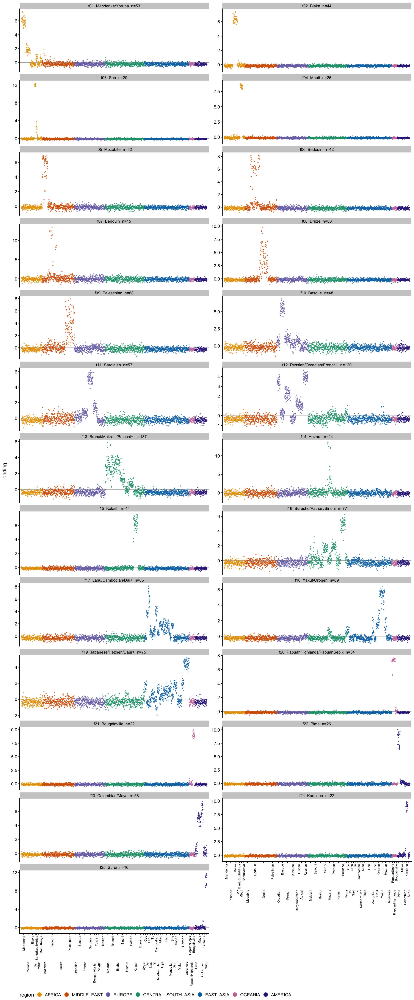
| Version | Author | Date |
|---|---|---|
| c54cd5b | Matthew Stephens | 2026-09-18 |
plot_pop_heatmap(L_60, hm)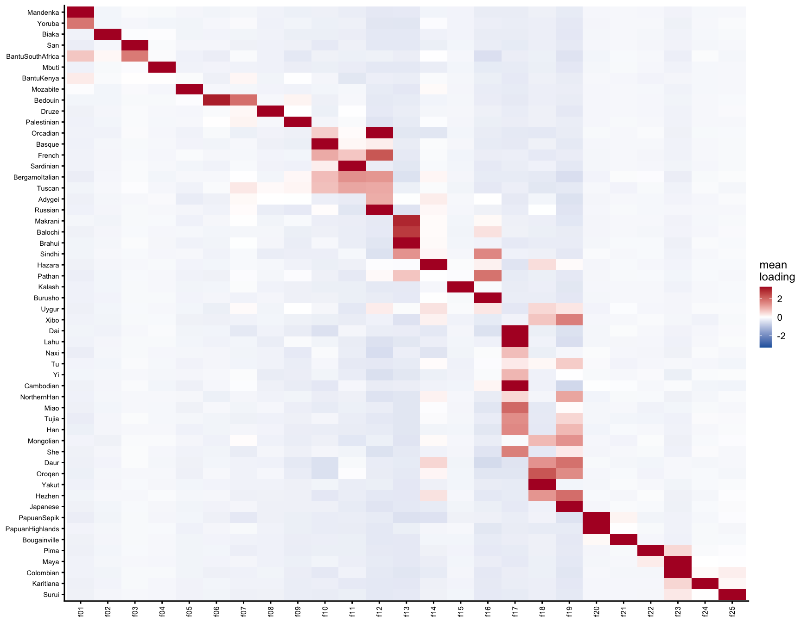
| Version | Author | Date |
|---|---|---|
| c54cd5b | Matthew Stephens | 2026-09-18 |
The rank-\(r\) fit is a different matter: it must use all 60 directions, and its total objective rises from 25.2 at \(K = 40\) to 30.3 at \(K = 60\). So the extra components are doing something — they are just not creating new unconstrained maxima. Here are all 60:
rr60 <- fit$fits$k60$fit$L
rr60 <- rr60[, pop_order_of(rr60, hm), drop = FALSE]
colnames(rr60) <- sprintf("f%02d", seq_len(ncol(rr60)))
rr_tab <- data.frame(factor = colnames(rr60),
pops = apply(rr60, 2, pop_label, m = hm),
obj = round(skew_obj(rr60), 2),
n_above2 = colSums(rr60 > 2),
max_loading = round(apply(rr60, 2, max), 1),
row.names = NULL)
rr_tab factor pops obj n_above2 max_loading
1 f01 Mandenka 0.81 44 7.6
2 f02 Biaka 0.90 44 7.2
3 f03 Yoruba/BantuSouthAfrica 0.73 71 6.8
4 f04 San 0.94 19 12.3
5 f05 Mbuti 0.92 26 8.8
6 f06 Mozabite 0.82 50 7.6
7 f07 BantuKenya 0.67 25 18.0
8 f08 Bedouin 0.87 42 8.3
9 f09 Bedouin 0.74 15 13.5
10 f10 Druze 0.73 48 10.3
11 f11 Druze 0.65 34 12.2
12 f12 Palestinian 0.65 35 13.0
13 f13 BantuKenya/BantuSouthAfrica 0.32 67 9.0
14 f14 Palestinian 0.58 19 16.8
15 f15 Basque 0.70 48 6.9
16 f16 Palestinian/BergamoItalian 0.36 58 7.8
17 f17 Bedouin/Orcadian/Tuscan+ 0.26 60 6.7
18 f18 Bedouin/BantuSouthAfrica/PapuanSepik+ 0.26 74 6.8
19 f19 Mozabite/Adygei/She+ 0.23 53 7.7
20 f20 Palestinian/PapuanSepik/Bedouin+ 0.26 55 8.4
21 f21 PapuanSepik/Palestinian/Mozabite+ 0.25 64 7.9
22 f22 Palestinian/Hezhen 0.29 60 7.0
23 f23 Sardinian 0.71 58 5.9
24 f24 Brahui/Mandenka/Makrani+ 0.19 68 5.5
25 f25 Orcadian 0.25 65 6.1
26 f26 Makrani/Balochi/Druze+ 0.27 64 7.8
27 f27 BantuSouthAfrica/Balochi/Oroqen+ 0.18 72 5.3
28 f28 Tuscan/Pathan/BergamoItalian+ 0.22 59 7.8
29 f29 Tuscan/Naxi/Makrani+ 0.18 76 4.4
30 f30 Russian/Orcadian/French 0.60 106 5.4
31 f31 Adygei 0.27 53 5.7
32 f32 Naxi/Sindhi/Makrani+ 0.18 69 5.9
33 f33 PapuanHighlands/Brahui/Orcadian+ 0.18 66 5.3
34 f34 Brahui/Balochi/Makrani+ 0.23 75 6.4
35 f35 Balochi/PapuanHighlands/Makrani+ 0.23 67 6.4
36 f36 PapuanSepik/Hazara/Adygei+ 0.19 72 5.3
37 f37 BantuSouthAfrica/Druze/Uygur+ 0.15 70 5.7
38 f38 Brahui/Kalash/BergamoItalian+ 0.32 85 5.6
39 f39 Xibo/Adygei/Brahui+ 0.18 81 4.6
40 f40 Balochi/Makrani/Brahui 0.25 62 7.9
41 f41 Makrani 0.58 21 15.9
42 f42 Brahui/Balochi 0.45 71 7.5
43 f43 Kalash 0.37 50 9.8
44 f44 Sindhi/Pathan 0.38 93 5.1
45 f45 Hazara 0.61 23 13.6
46 f46 Naxi/Yi/Tu+ 0.30 70 6.1
47 f47 Kalash 0.77 43 8.8
48 f48 Burusho 0.63 50 7.1
49 f49 Oroqen/Hezhen/Daur+ 0.19 78 5.1
50 f50 Lahu 0.64 23 12.1
51 f51 Dai/Cambodian/She+ 0.47 102 5.6
52 f52 Japanese 0.48 61 5.6
53 f53 Yakut 0.74 54 6.5
54 f54 PapuanHighlands/PapuanSepik 0.90 34 7.6
55 f55 Colombian 0.71 16 13.1
56 f56 Bougainville 0.91 22 9.9
57 f57 Maya 0.74 50 7.0
58 f58 Pima 0.89 26 10.0
59 f59 Karitiana 0.90 22 9.8
60 f60 Surui 0.92 16 11.8# Three columns rather than two: 60 panels at two columns is an unreadably
# long figure.
plot_loadings(rr60, hm, rr_tab, ncol = 3)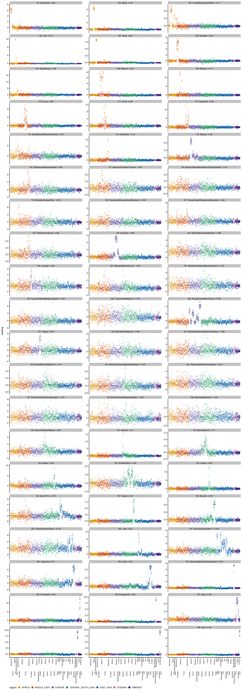
| Version | Author | Date |
|---|---|---|
| c54cd5b | Matthew Stephens | 2026-09-18 |
Splitting them by whether they correspond to an unconstrained maximum tells the story:
Cx <- cor(rr60, L_60)
is_max <- apply(Cx, 1, max) > 0.9
c(matches_a_maximum = sum(is_max), does_not = sum(!is_max),
maxima_represented = sum(apply(Cx, 2, max) > 0.9), of_maxima = ncol(L_60)) matches_a_maximum does_not maxima_represented of_maxima
19 41 19 25 round(rbind(`matches a maximum` = summary(rr_tab$obj[is_max]),
`does not` = summary(rr_tab$obj[!is_max])), 2) Min. 1st Qu. Median Mean 3rd Qu. Max.
matches a maximum 0.60 0.72 0.82 0.80 0.90 0.94
does not 0.15 0.23 0.27 0.37 0.48 0.74summary(rr_tab$n_above2[!is_max]) Min. 1st Qu. Median Mean 3rd Qu. Max.
16.00 53.00 64.00 60.05 71.00 102.00 Only 19 of the 60 correspond to a maximum, and those are the good ones — objectives 0.60 to 0.94, median 0.82, in the same range as the maxima themselves (0.58 to 0.96). The other 41 have objectives from 0.15 to 0.74 with a median of 0.27, and they are not narrow: a median of 64 haplotypes load above 2 on them. They are diffuse, low-objective directions that exist only because orthogonality requires 60 components to be produced, and they dissolve if the constraint is lifted — the same thing the 1000 Genomes analysis saw with the factors that “slid away” under rank-1 refinement.
Note also that the rank-\(r\) fit does not even represent all the maxima: 6 of the 25 have no \(K = 60\) factor correlating above 0.9 with them. Raising \(K\) buys objective and diffuse extra directions, not resolution. The next section adds that these factors also fail the non-negativity test the maxima pass.
A different way to ask which maxima are real: fit the two halves of the SNPs independently and keep only what both find. SNP names are chrN:pos, so we split on chromosome parity, which keeps whole chromosomes together and so cannot split residual LD across the two halves. Each half gets its own centred SVD, its own \(K = 40\) rank-\(r\) fit and its own 1000 rank-1 runs — nothing is shared but the individuals.
sp <- fit$split
odd <- name_maxima(sp$odd$maxima$L, hm, sp$odd$maxima$n_random)
even <- name_maxima(sp$even$maxima$L, hm, sp$even$maxima$n_random)
rbind(odd = c(SNPs = sp$odd$n_snps, maxima = ncol(odd$L)),
even = c(SNPs = sp$even$n_snps, maxima = ncol(even$L)),
all = c(SNPs = fit$nsnp, maxima = ncol(L_r1))) SNPs maxima
odd 106718 20
even 108750 20
all 215468 25Each half finds 20 maxima against 25 on the full data. Matching them to each other:
Cs <- cor(odd$L, even$L)
data.frame(odd = odd$tab$pops,
odd_starts = odd$tab$rand_starts,
even = even$tab$pops[apply(Cs, 1, which.max)],
even_starts = even$tab$rand_starts[apply(Cs, 1, which.max)],
r = round(apply(Cs, 1, max), 3), row.names = NULL) odd odd_starts
1 Mandenka/Yoruba/BantuKenya+ 2
2 Biaka 44
3 San 219
4 Mbuti 135
5 Mozabite 10
6 Bedouin 5
7 Druze 2
8 Bedouin/Adygei/Palestinian 1
9 Palestinian 0
10 Sardinian/Basque/BergamoItalian+ 0
11 Brahui/Balochi/Makrani+ 0
12 Burusho/Sindhi/Pathan 0
13 Kalash 31
14 Lahu/Dai/Cambodian+ 0
15 Yakut/Oroqen/Daur+ 1
16 PapuanHighlands/PapuanSepik/Bougainville 142
17 Bougainville 86
18 Pima 60
19 Karitiana 126
20 Surui 136
even even_starts r
1 Mandenka/Yoruba/BantuKenya+ 9 0.987
2 Biaka 52 0.969
3 San 218 0.965
4 Mbuti 142 0.977
5 Mozabite 17 0.927
6 Bedouin 9 0.924
7 Druze 5 0.888
8 Bedouin 9 0.177
9 Palestinian 0 0.827
10 Sardinian/Basque/BergamoItalian+ 0 0.904
11 Brahui/Makrani/Balochi+ 0 0.913
12 Burusho/Pathan/Sindhi 0 0.835
13 Kalash 27 0.955
14 Lahu/Dai/Cambodian+ 0 0.930
15 Yakut/Oroqen/Hezhen+ 3 0.931
16 PapuanHighlands/PapuanSepik/Bougainville 147 0.988
17 Bougainville 71 0.955
18 Pima 66 0.955
19 Karitiana 90 0.954
20 Surui 144 0.952c(odd_matched_0.9 = sum(apply(Cs, 1, max) > 0.9),
even_matched_0.9 = sum(apply(Cs, 2, max) > 0.9),
odd_matched_0.8 = sum(apply(Cs, 1, max) > 0.8),
of = ncol(odd$L)) odd_matched_0.9 even_matched_0.9 odd_matched_0.8 of
16 16 19 20 Nineteen of the 20 pair up, and the agreement is close: 16 pairs above \(r = 0.9\) and three more between 0.83 and 0.89 — Druze, Palestinian and Burusho/Pathan, the broad shallow factors, which are the ones a halved SNP set should estimate least precisely. Basin sizes across the matched pairs correlate at 0.99.
ok <- apply(Cs, 1, max) > 0.8
round(cor(odd$tab$rand_starts[ok],
even$tab$rand_starts[apply(Cs, 1, which.max)][ok]), 2)[1] 0.99The single genuine disagreement is the odd half’s eighth maximum, matching its best even partner at \(r =\) 0.18:
odd$tab$pops[which.min(apply(Cs, 1, max))][1] "Bedouin/Adygei/Palestinian"More interesting is what both halves miss relative to the full data. They miss the same seven maxima:
Do <- cor(L_r1, odd$L); De <- cor(L_r1, even$L)
data.frame(full = r1$tab$pops,
best_odd = round(apply(Do, 1, max), 2),
best_even = round(apply(De, 1, max), 2),
row.names = NULL) full best_odd best_even
1 Mandenka/Yoruba 0.92 0.92
2 Biaka 0.99 0.99
3 San 0.99 0.99
4 Mbuti 0.99 0.99
5 Mozabite 0.98 0.98
6 Bedouin 0.98 0.98
7 Bedouin 0.86 0.13
8 Druze 0.96 0.97
9 Palestinian 0.93 0.95
10 Basque 0.64 0.74
11 Sardinian 0.78 0.79
12 Russian/Orcadian/French+ 0.29 0.51
13 Brahui/Makrani/Balochi+ 0.95 0.97
14 Hazara 0.04 0.09
15 Kalash 0.99 0.99
16 Burusho/Pathan/Sindhi 0.94 0.93
17 Lahu/Dai/Cambodian+ 0.95 0.96
18 Japanese/Hezhen/Daur+ 0.27 0.26
19 Yakut/Oroqen 0.98 0.97
20 PapuanHighlands/PapuanSepik 0.95 0.93
21 Bougainville 0.99 0.99
22 Pima 0.98 0.98
23 Colombian/Maya 0.20 0.23
24 Karitiana 0.99 0.99
25 Surui 0.99 0.99miss_o <- r1$tab$pops[apply(Do, 1, max) < 0.9]
miss_e <- r1$tab$pops[apply(De, 1, max) < 0.9]
c(missing_from_odd = length(miss_o), missing_from_even = length(miss_e),
same_set = identical(sort(miss_o), sort(miss_e))) missing_from_odd missing_from_even same_set
7 7 1 miss_o[1] "Bedouin" "Basque"
[3] "Sardinian" "Russian/Orcadian/French+"
[5] "Hazara" "Japanese/Hezhen/Daur+"
[7] "Colombian/Maya" That the two independent halves lose exactly the same seven is the point — these are not random failures. Where each one goes:
mo <- apply(Do, 1, max) < 0.9
data.frame(full = r1$tab$pops[mo],
best_odd = odd$tab$pops[apply(Do, 1, which.max)][mo],
r_odd = round(apply(Do, 1, max)[mo], 2),
best_even = even$tab$pops[apply(De, 1, which.max)][mo],
r_even = round(apply(De, 1, max)[mo], 2), row.names = NULL) full best_odd r_odd
1 Bedouin Bedouin/Adygei/Palestinian 0.86
2 Basque Sardinian/Basque/BergamoItalian+ 0.64
3 Sardinian Sardinian/Basque/BergamoItalian+ 0.78
4 Russian/Orcadian/French+ Sardinian/Basque/BergamoItalian+ 0.29
5 Hazara Brahui/Balochi/Makrani+ 0.04
6 Japanese/Hezhen/Daur+ Lahu/Dai/Cambodian+ 0.27
7 Colombian/Maya Pima 0.20
best_even r_even
1 Bedouin 0.13
2 Basque/Sardinian/French+ 0.74
3 Sardinian/Basque/BergamoItalian+ 0.79
4 Basque/Sardinian/French+ 0.51
5 Burusho/Pathan/Sindhi 0.09
6 Lahu/Dai/Cambodian+ 0.26
7 Pima 0.23They fall into three groups.
Merged. Basque and Sardinian are absorbed into a broad European factor in both halves (\(r\) = 0.64–0.79), and Russian/Orcadian/French partly with them. Europe goes from three factors on the full data to one on the odd half and two on the even — the split is real but needs the full marker set.
list(full = grep("Basque|Sardinian|Russian|Orcadian|French", r1$tab$pops, value = TRUE),
odd = grep("Basque|Sardinian|Russian|Orcadian|French", odd$tab$pops, value = TRUE),
even = grep("Basque|Sardinian|Russian|Orcadian|French", even$tab$pops, value = TRUE))$full
[1] "Basque" "Sardinian"
[3] "Russian/Orcadian/French+"
$odd
[1] "Sardinian/Basque/BergamoItalian+"
$even
[1] "Basque/Sardinian/French+" "Sardinian/Basque/BergamoItalian+"Unresolved. Japanese/Hezhen/Daur and Colombian/Maya have no counterpart at all (\(r \le 0.27\)): East Asia drops from three factors to two and the Americas from four to three. These are splits the halves cannot see rather than splits they blur.
The nuisance factors. Hazara is the least reproducible thing in the whole analysis — \(r\) of 0.04 and 0.09, effectively absent from both halves — and the Bedouin cluster is found by the odd half (\(r = 0.86\)) and not the even (\(r = 0.13\)). That is a point against those two factors rather than against the data, and it agrees with the pruning check, which identified exactly these two as within-population clusters. So two independent lines of evidence say the same thing about them.
This is the same behaviour as in the 1000 Genomes analysis, where the halves also merged the finer distinctions, and it is worth reading both ways: the coarse structure is what replicates on half the markers, and the finer splits the full data supports are real but need the markers to see.
Following fastica_1kg_structure, we turn the maxima into structure plots. A structure plot needs non-negative memberships, which signed ICA sources are not; but the \(x|x|\) sources are one-sided, so their positive parts may serve directly. Take \[
A = \max(L, 0), \qquad X \approx AB + E \ \text{fitted by least squares},
\] and if \(B\) comes out non-negative, rescale each row of \(B\) to sum to 1 and scale the corresponding column of \(A\) to compensate. The rows of \(A\) are then memberships on a common scale. There is no intercept column and \(X\) is left uncentered: with an intercept the rows of \(B\) become increments to allele frequency, which are necessarily signed. This is done in code/fit_hgdp_structure.R.
One thing differs from the 1000 Genomes version: the rows here are haplotypes, so a membership is a membership of a single chromosome, and an individual appears as two adjacent bars that need not agree.
do.call(rbind, lapply(names(struct), function(nm) {
z <- struct[[nm]]
data.frame(sources = nm, K = z$K,
`n B < -0.01` = z$n_lt, of = z$K * z$n_snps,
frac = signif(z$frac_lt, 2),
min_B = round(z$min_B, 3), `mean |B|` = round(z$mean_abs, 3),
R2 = round(z$r2, 3), check.names = FALSE, row.names = NULL)
})) sources K n B < -0.01 of frac min_B mean |B| R2
1 maxima_k40 25 46 5386700 8.5e-06 -0.014 0.049 0.585
2 rankr_k40 40 482112 8618720 5.6e-02 -0.176 0.028 0.538
3 maxima_k60 25 47 5386700 8.7e-06 -0.014 0.048 0.557
4 rankr_k60 60 1069782 12928080 8.3e-02 -0.250 0.021 0.569The same split as in the 1000 Genomes data, and sharper. For the rank-1 maxima at both \(K\), \(B\) is non-negative to within rounding: 46 and 47 entries out of 5.4 million below \(-0.01\), with minima of about \(-0.014\) against a mean \(|B|\) of 0.05. Clipping those at zero changes nothing.
For both rank-\(r\) fits it fails, and it gets worse as \(K\) grows: 5.6% of entries below \(-0.01\) at \(K = 40\) and 8.3% at \(K = 60\), with minima of \(-0.18\) and \(-0.25\).
The \(R^2\) column is the other half of the same point. It is the fit of \(X \approx \max(L,0) B\), so it measures how much of the data survives taking positive parts. The 25 maxima reach 0.585, better than the 60 rank-\(r\) factors at 0.569 despite using less than half as many components, because the maxima are one-sided and lose almost nothing to \(\max(L, 0)\) while the rank-\(r\) factors are two-sided and lose a great deal.
The structure plots below therefore use maxima only.
src <- list(
`K = 40 maxima` = list(L = fit$fits$k40$maxima$L, key = "maxima_k40"),
`K = 60 maxima` = list(L = fit$fits$k60$maxima$L, key = "maxima_k60"))
# A = pmax(L, 0) with columns rescaled so the rows of B sum to 1, factors in
# the same geographic order as everywhere else and labelled by the populations
# they carry.
memberships <- function(name) {
L <- src[[name]]$L
r <- struct[[src[[name]]$key]]$r
o <- pop_order_of(L, hm)
A <- sweep(pmax(L[, o, drop = FALSE], 0), 2, r[o], "*")
colnames(A) <- make.unique(apply(L[, o, drop = FALSE], 2, pop_label,
m = hm, top = 2))
A <- A / mean(rowSums(A)) # bar heights on a scale of about 1
# A haplotype with no positive loading on any source has no membership
# representation at all; drop those and record how many.
zero <- rowSums(A) == 0
list(A = A[!zero, , drop = FALSE], pop = droplevels(hm$pop[!zero]),
n_dropped = sum(zero))
}
plot_structure <- function(name, normalize = FALSE) {
m <- memberships(name)
A <- if (normalize) m$A / rowSums(m$A) else m$A
set.seed(1) # structure_plot orders within each group by t-SNE
structure_plot(A, grouping = m$pop, gap = 8, verbose = FALSE,
colors = Polychrome::glasbey.colors(ncol(A) + 1)[-1]) +
labs(y = "membership", fill = NULL,
title = sprintf("%s (%s)%s", name,
if (normalize) "normalized" else "unnormalized",
if (m$n_dropped)
sprintf(" - %d haplotype(s) dropped", m$n_dropped)
else "")) +
theme(axis.text.x = element_text(angle = 90, vjust = 0.5, hjust = 1,
size = 6),
legend.text = element_text(size = 6),
legend.key.size = unit(0.32, "cm"))
}The normalized plots show composition; the unnormalized ones keep the bar heights, which carry information the normalized version discards — a short bar is a haplotype poorly explained by all the factors in the set.
plot_structure("K = 40 maxima", normalize = TRUE)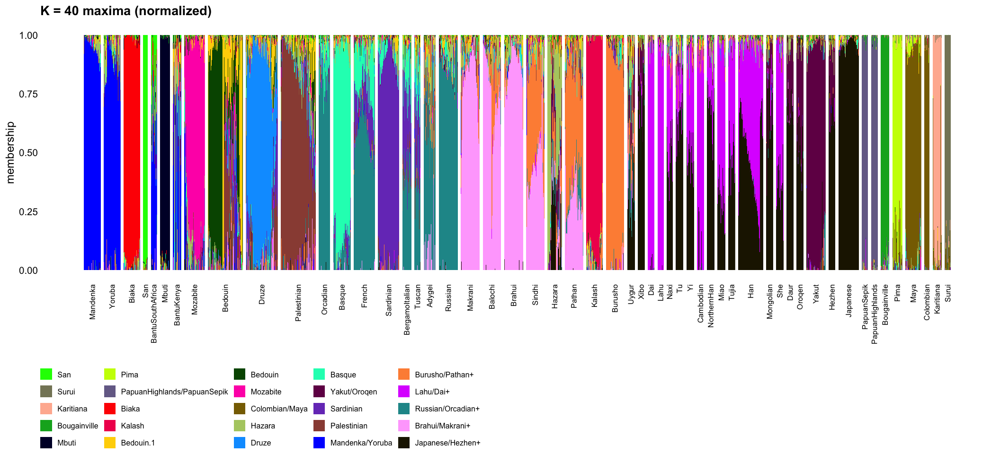
| Version | Author | Date |
|---|---|---|
| c54cd5b | Matthew Stephens | 2026-09-18 |
plot_structure("K = 40 maxima")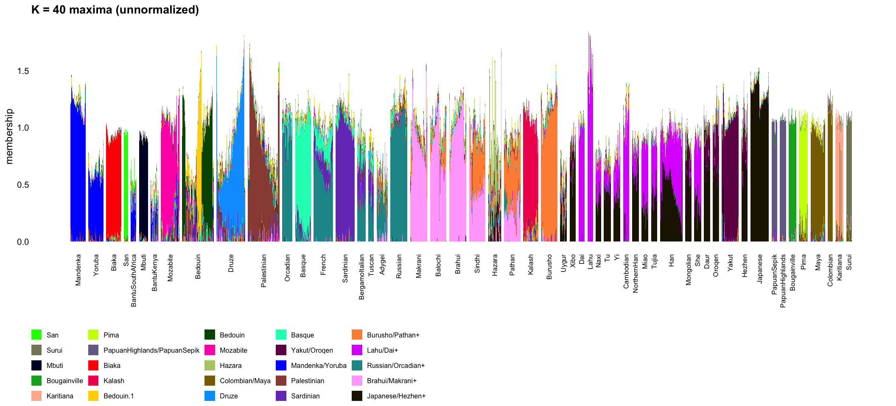
| Version | Author | Date |
|---|---|---|
| c54cd5b | Matthew Stephens | 2026-09-18 |
The maxima are the same, so these should be — and are — the same plots. They are shown for completeness.
plot_structure("K = 60 maxima", normalize = TRUE)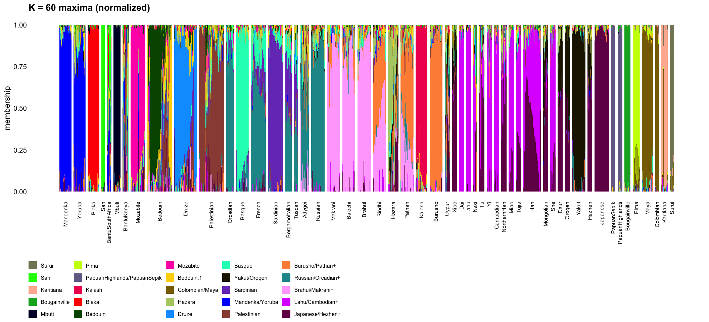
| Version | Author | Date |
|---|---|---|
| c54cd5b | Matthew Stephens | 2026-09-18 |
plot_structure("K = 60 maxima")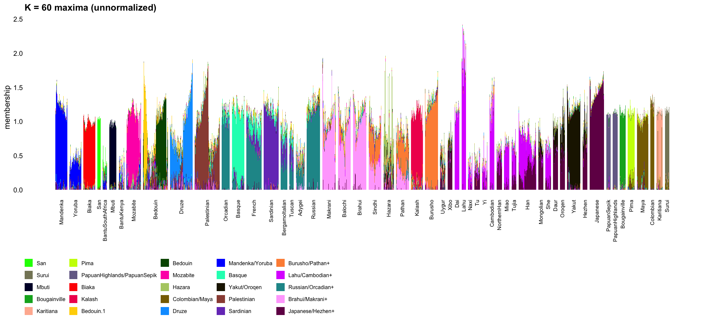
| Version | Author | Date |
|---|---|---|
| c54cd5b | Matthew Stephens | 2026-09-18 |
mp <- memberships("K = 40 maxima")
P <- mp$A / rowSums(mp$A)
M <- apply(P, 2, function(x) tapply(x, mp$pop, mean))
# For each population, the factors making up at least 10% of it on average.
data.frame(
pop = rownames(M),
composition = apply(M, 1, function(x) {
x <- sort(x[x >= 0.1], decreasing = TRUE)
paste(sprintf("%s %d%%", names(x), round(100 * x)), collapse = ", ")
}), row.names = NULL) pop
1 Mandenka
2 Yoruba
3 Biaka
4 San
5 BantuSouthAfrica
6 Mbuti
7 BantuKenya
8 Mozabite
9 Bedouin
10 Druze
11 Palestinian
12 Orcadian
13 Basque
14 French
15 Sardinian
16 BergamoItalian
17 Tuscan
18 Adygei
19 Russian
20 Makrani
21 Balochi
22 Brahui
23 Sindhi
24 Hazara
25 Pathan
26 Kalash
27 Burusho
28 Uygur
29 Xibo
30 Dai
31 Lahu
32 Naxi
33 Tu
34 Yi
35 Cambodian
36 NorthernHan
37 Miao
38 Tujia
39 Han
40 Mongolian
41 She
42 Daur
43 Oroqen
44 Yakut
45 Hezhen
46 Japanese
47 PapuanSepik
48 PapuanHighlands
49 Bougainville
50 Pima
51 Maya
52 Colombian
53 Karitiana
54 Surui
composition
1 Mandenka/Yoruba 93%
2 Mandenka/Yoruba 85%
3 Biaka 95%
4 San 98%
5 Mandenka/Yoruba 57%, San 24%
6 Mbuti 96%
7 Mandenka/Yoruba 47%, Hazara 15%
8 Mozabite 79%
9 Bedouin 46%, Bedouin.1 22%, Palestinian 11%
10 Druze 71%
11 Palestinian 72%
12 Russian/Orcadian+ 81%
13 Basque 83%
14 Russian/Orcadian+ 58%, Basque 18%, Sardinian 14%
15 Sardinian 87%
16 Russian/Orcadian+ 39%, Sardinian 31%, Basque 15%
17 Russian/Orcadian+ 35%, Sardinian 26%, Basque 17%
18 Russian/Orcadian+ 55%
19 Russian/Orcadian+ 86%
20 Brahui/Makrani+ 81%
21 Brahui/Makrani+ 74%, Burusho/Pathan+ 13%
22 Brahui/Makrani+ 86%
23 Brahui/Makrani+ 45%, Burusho/Pathan+ 40%
24 Hazara 45%, Japanese/Hezhen+ 14%, Yakut/Oroqen 12%
25 Burusho/Pathan+ 49%, Brahui/Makrani+ 29%
26 Kalash 89%
27 Burusho/Pathan+ 89%
28 Japanese/Hezhen+ 29%, Yakut/Oroqen 15%, Burusho/Pathan+ 14%, Russian/Orcadian+ 13%
29 Japanese/Hezhen+ 73%, Yakut/Oroqen 15%
30 Lahu/Dai+ 95%
31 Lahu/Dai+ 96%
32 Japanese/Hezhen+ 48%, Lahu/Dai+ 41%
33 Japanese/Hezhen+ 64%, Lahu/Dai+ 19%
34 Japanese/Hezhen+ 47%, Lahu/Dai+ 43%
35 Lahu/Dai+ 86%
36 Japanese/Hezhen+ 68%, Lahu/Dai+ 22%
37 Lahu/Dai+ 65%, Japanese/Hezhen+ 29%
38 Lahu/Dai+ 51%, Japanese/Hezhen+ 44%
39 Lahu/Dai+ 47%, Japanese/Hezhen+ 47%
40 Japanese/Hezhen+ 67%, Yakut/Oroqen 19%
41 Lahu/Dai+ 59%, Japanese/Hezhen+ 35%
42 Japanese/Hezhen+ 66%, Yakut/Oroqen 26%
43 Japanese/Hezhen+ 53%, Yakut/Oroqen 40%
44 Yakut/Oroqen 90%
45 Japanese/Hezhen+ 66%, Yakut/Oroqen 24%
46 Japanese/Hezhen+ 96%
47 PapuanHighlands/PapuanSepik 95%
48 PapuanHighlands/PapuanSepik 97%
49 Bougainville 95%
50 Pima 86%
51 Colombian/Maya 89%
52 Colombian/Maya 96%
53 Karitiana 87%
54 Surui 92%Most populations come out close to a hard assignment — San 98%, PapuanHighlands 97%, Mbuti and Japanese and Colombian and Lahu 96%, Biaka and Bougainville and PapuanSepik 95% — and where there is mixture it is where geography says it should be:
These are the expected admixture patterns, read off ICA sources rather than fitted under a non-negativity constraint.
Not pruning has a visible cost here, and it is worth naming. Two of the 25 factors are the within-population clusters from the pruning check, and they absorb membership that would otherwise go to a population factor: the Bedouin are split 46% Bedouin and 22% Bedouin.1, and BantuKenya picks up 15% on the Hazara cluster factor. Hazara itself now has 45% on a factor of its own, where in the pruned fit it was a genuinely admixed population with none. So the unpruned memberships are readable, but the two nuisance factors have to be recognized as such rather than read as ancestry.
The unnormalized plots add something the normalized ones cannot show. Bar heights run from about 0.4 to 1.6 around a median near 1, and the low end is systematic rather than noise: the populations with the shortest bars are the ones that sit between factors rather than owning one.
mk <- memberships("K = 40 maxima")
mh <- sort(tapply(rowSums(mk$A), mk$pop, mean))
round(head(mh, 6), 2) # shortest bars BantuKenya BantuSouthAfrica Uygur Adygei
0.40 0.54 0.60 0.60
Yoruba Tu
0.64 0.74 round(rev(tail(mh, 6)), 2) # tallest Lahu Japanese Mandenka Russian Colombian Burusho
1.53 1.35 1.23 1.22 1.21 1.19 round(quantile(rowSums(mk$A), c(0, 0.01, 0.5, 0.99, 1)), 2) 0% 1% 50% 99% 100%
0.15 0.38 1.02 1.57 1.84 The shortest bars are BantuKenya and BantuSouthAfrica, the two admixed African populations, then Uygur and Adygei, the two admixed populations between West Eurasia and East Asia, then Yoruba and Tu. The tallest are Lahu, Japanese, Mandenka, Russian, Colombian and Burusho — populations that essentially own a factor each. So the bar height is reading as “how well any one source explains this haplotype”, which is the diagnostic it is supposed to provide and which the normalized plot discards. Unlike the 1000 Genomes case no single bar dominates: the 99th percentile is 1.57 against a maximum of 1.84.
The structure fit gives a residual, \(E = X - AB\), and the obvious question is whether the \(x|x|\) search finds anything in it. So we run exactly the same procedure on \(E\) that the main analysis ran on \(X\): centre, whiten to 40 dimensions, 1000 random rank-1 starts, cluster. code/fit_hgdp_residual.R does this, and never forms \(E\) — with \(M = XB'\) its Gram matrix is \[
EE' = XX' - MA' - AM' + A(BB')A',
\] and the centred version follows from that and \(\mu_E\) as usual.
res <- readRDS("../output/hgdp_residual.rds")
c(sources_removed = res$n_sources,
residual_ss_fraction = round(res$ss_ratio, 3),
centred_var_fraction = round(sum(res$d^2) / sum(fit$d^2), 3)) sources_removed residual_ss_fraction centred_var_fraction
25.000 0.415 0.112 The 25 non-negative sources take out 58% of the raw sum of squares and 89% of the centred variance. What is left is not flat, though:
ggplot(data.frame(k = 1:40, d = res$d[1:40]), aes(k, d)) +
geom_point(size = 1.2) +
labs(x = "component", y = "singular value of the centred residual") +
theme_cowplot(font_size = 10)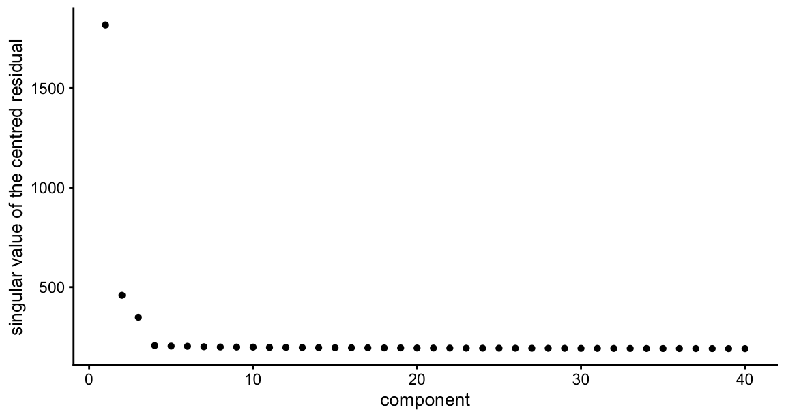
| Version | Author | Date |
|---|---|---|
| c54cd5b | Matthew Stephens | 2026-09-18 |
round(res$d[1:12]) [1] 1817 459 349 206 204 203 201 199 199 199 197 197round(res$d[1]^2 / sum(res$d^2), 3) # share of residual variance in PC1[1] 0.573One direction dominates completely — 57% of the remaining centred variance — then two more stand a little above a flat plateau from component 4 on, which is what noise looks like.
hm_res <- hap_meta(res$ids)
c(n_maxima = ncol(res$L), largest_basin = max(res$size)) n_maxima largest_basin
4 928 res$n_cut # cutting at correlation 0.90 / 0.95 / 0.99[1] 4 4 4o_r <- pop_order_of(res$L, hm_res)
L_res <- res$L[, o_r, drop = FALSE]
colnames(L_res) <- sprintf("r%02d", seq_len(ncol(L_res)))
res_tab <- data.frame(factor = colnames(L_res),
pops = apply(L_res, 2, pop_label, m = hm_res),
obj = round(skew_obj(L_res), 2),
n_above2 = colSums(L_res > 2),
max_loading = round(apply(L_res, 2, max), 1),
basin = res$size[o_r], row.names = NULL)
res_tab factor pops obj n_above2 max_loading basin
1 r01 BantuKenya/BantuSouthAfrica 0.75 33 16.0 928
2 r02 Druze/Lahu 0.40 25 12.1 5
3 r03 Adygei/Tuscan/Bedouin 0.41 90 7.7 9
4 r04 Makrani/She/Burusho+ 0.48 17 15.8 58Four maxima against 25 on the data itself, and 928 of the 1000 starts go to one of them. They are also genuinely new directions rather than leftovers of the sources we removed:
round(apply(cor(res$L, fit$fits$k40$maxima$L), 1, function(z) max(abs(z))), 2)[1] 0.04 0.02 0.03 0.06plot_loadings(L_res, hm_res, res_tab)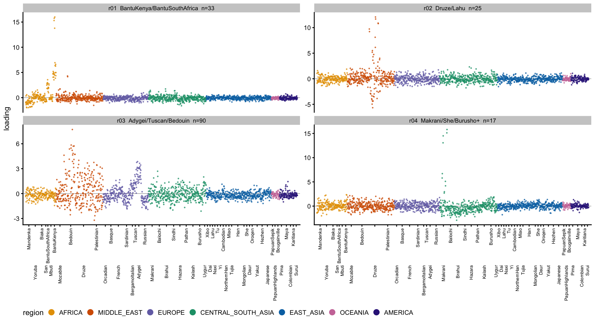
| Version | Author | Date |
|---|---|---|
| c54cd5b | Matthew Stephens | 2026-09-18 |
The leading residual maximum loads on BantuKenya at a mean of 6.8 and BantuSouthAfrica at 2.3, with essentially nothing anywhere else — the two admixed African populations. That is a strong hint, and the residual PC1 makes it exact. Compare it with the structure-plot bar heights, which measure how well the non-negative model explains each haplotype:
h <- rowSums(mk$A) # bar height per haplotype, from above
pc1 <- res$U_c[, 1]
if (cor(pc1, h) > 0) pc1 <- -pc1 # orient so positive = poorly explained
round(cor(pc1, h), 3)[1] -0.983ggplot(data.frame(pc1 = pc1, h = h, region = hm_res$region),
aes(pc1, h, colour = region)) +
geom_point(size = 0.7, alpha = 0.8) +
scale_colour_manual(values = region_palette) +
labs(x = "residual PC1 (oriented)", y = "structure bar height") +
theme_cowplot(font_size = 9) + theme(legend.position = "none")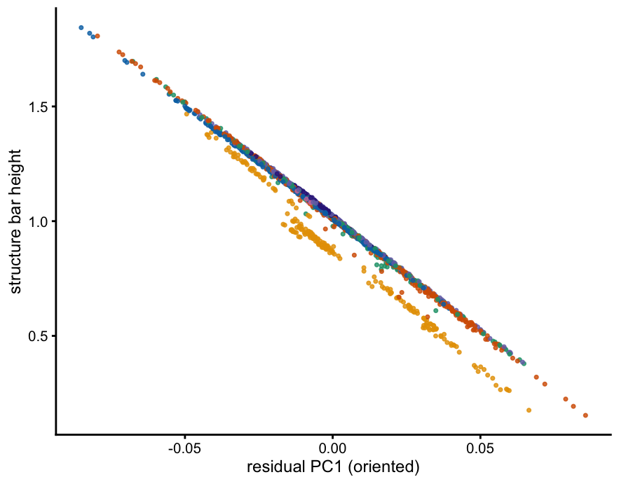
| Version | Author | Date |
|---|---|---|
| c54cd5b | Matthew Stephens | 2026-09-18 |
The correlation is \(-0.983\) at the haplotype level and \(-0.967\) at the population level. The dominant direction in the residual is not population structure the sources missed; it is the sources failing on the admixed individuals. A model of 25 one-sided, non-negative sources represents a haplotype well when one source owns it and badly when it is a mixture, and the residual’s first component is precisely that failure, sorted.
That also explains why the rank-1 search finds so little. The residual is 89% smaller than the data in centred variance, most of what remains is the misfit axis rather than a source, and the four maxima it does find are all low-objective — 0.40 to 0.75 against 0.58 to 0.96 for the real ones. None of them is a new population: r01 is the admixed African pair, r02 a cluster inside Druze, r04 a handful of Makrani, and r03 a broad, shallow West Eurasian gradient over Bedouin, Adygei and Tuscan with a maximum loading under 8. There is no hidden 26th population factor here.
It is worth being clear about what this does and does not test. It says the non-negative representation leaves nothing source-like behind, which is a statement about \(A = \max(L, 0)\) and \(B\), not about the ICA fit itself: the residual is defined by discarding the negative parts of the sources, so some of what it contains is the information those negative parts carried.
One factor covers both Mandenka and Yoruba, but it does not cover them equally, and following that through explains both the bar-height diagnostic and the residual result better than either does on its own.
nc <- c("Mandenka", "Yoruba", "BantuKenya", "BantuSouthAfrica")
j1 <- which.max(colMeans(pmax(L_r1, 0)[hm$pop == "Mandenka", , drop = FALSE]))
round(rbind(`loading on the shared factor` = tapply(L_r1[, j1], hm$pop, mean)[nc],
`structure bar height` = tapply(rowSums(mk$A), mk$pop, mean)[nc]), 2) Mandenka Yoruba BantuKenya BantuSouthAfrica
loading on the shared factor 5.51 2.58 0.87 1.45
structure bar height 1.23 0.64 0.40 0.54Mandenka load at 5.5 and Yoruba at 2.6 — a factor of 2.1 — and the bar heights follow. Note the ordering continues into the two Bantu populations.
rbind(`drift ||f_pop - mu||^2` = round(res$pop_dev[nc]),
`heterozygosity x 1000` = round(1000 * res$pop_het[nc], 1),
`centred haplotype norm^2` = round(tapply(res$cx2, hm$pop, mean)[nc]),
`sample size (individuals)` = table(meta$pop)[nc]) Mandenka Yoruba BantuKenya BantuSouthAfrica
drift ||f_pop - mu||^2 7749 7861.0 7663.0 8947.0
heterozygosity x 1000 259 259.8 257.2 250.3
centred haplotype norm^2 35656 35850.0 35371.0 35911.0
sample size (individuals) 22 22.0 11.0 8.0Mandenka and Yoruba are the same size (22 individuals each), equally heterozygous, and equally far from the global mean — so this is not “Yoruba are less differentiated”. Nor is the missing loading picked up elsewhere:
round(colMeans(mk$A[mk$pop == "Yoruba", -j1, drop = FALSE]), 3) -> other
round(c(`Yoruba on the shared factor` = mean(mk$A[mk$pop == "Yoruba", j1]),
`Yoruba on all other factors` = sum(other)), 3)Yoruba on the shared factor Yoruba on all other factors
0.537 0.102 Write the factor as a unit direction \(w\) in the whitened space and split the population-mean loading over the 40 whitened PCs. The loading of a population is \(\sum_k \bar z_k w_k\), so each PC makes a separate contribution.
Z <- sqrt(length(fit$hap_ids)) * fit$U_c[, 1:fit$K[1], drop = FALSE]
U_w <- t(Z)
w <- as.vector(U_w %*% L_r1[, j1]) / length(fit$hap_ids)
zm <- colMeans(Z[hm$pop == "Mandenka", , drop = FALSE])
zy <- colMeans(Z[hm$pop == "Yoruba", , drop = FALSE])
dec <- data.frame(PC = seq_along(w), w = round(w, 3),
Mandenka = round(zm * w, 3), Yoruba = round(zy * w, 3),
diff = round((zm - zy) * w, 3))
head(dec[order(-abs(dec$diff)), ], 5) PC w Mandenka Yoruba diff
22 22 0.429 1.881 -0.807 2.688
6 6 0.569 1.486 1.338 0.148
21 21 -0.046 0.026 -0.019 0.045
13 13 0.121 0.075 0.050 0.026
1 1 -0.516 1.112 1.131 -0.020c(total_gap = round(sum((zm - zy) * w), 2),
from_PC1_3 = round(sum(((zm - zy) * w)[1:3]), 2),
from_PC22 = round(((zm - zy) * w)[22], 2)) total_gap from_PC1_3 from_PC22
2.93 -0.04 2.69 PC22 accounts for 2.7 of the 2.9 gap; PC1–3 account for none of it. On the axes that carry most of the variance the two populations are indistinguishable. And PC22 is not a general axis — it is a within-Africa one, with only the four Niger-Congo populations away from zero:
m22 <- tapply(Z[, 22], hm$pop, mean)
round(m22[abs(m22) > 1], 2) # every other population Mandenka Yoruba BantuSouthAfrica BantuKenya
4.39 -1.88 -2.49 -4.20 round(range(m22[abs(m22) <= 1]), 2) # ... lies in this range[1] -0.46 0.59c(d1 = round(fit$d[1]), d6 = round(fit$d[6]), d22 = round(fit$d[22])) d1 d6 d22
1384 390 213 It runs Mandenka at one end and BantuKenya at the other with Yoruba in between, which is a Mande-versus-Bantu contrast. It is also uniform within Mandenka rather than driven by a few individuals:
z <- Z[hm$pop == "Mandenka", 22]
round(c(min = min(z), mean = mean(z), max = max(z), sd = sd(z)), 2) min mean max sd
2.83 4.39 6.35 0.79 Two things combine. Whitening puts PC22 (\(d = 213\)) on the same footing as PC1 (\(d = 1384\)), so a modest real axis becomes cheap to exploit. And \(x|x|\) rewards concentration rather than evenness, so the optimizer is happy to spend weight there: \(w\) puts 0.57 on PC6, the shared West African axis, and 0.43 on PC22.
Comparing the fitted direction with two alternatives makes the trade explicit — one with PC22 removed, and one pointing at the four Niger-Congo populations equally:
obj_of <- function(v) { v <- v / sqrt(sum(v^2)); q <- as.vector(Z %*% v)
mean(q * abs(q)) }
load_of <- function(v) { v <- v / sqrt(sum(v^2)); q <- as.vector(Z %*% v)
round(tapply(q, hm$pop, mean)[nc], 2) }
nsharp <- function(v) { v <- v / sqrt(sum(v^2)); sum(as.vector(Z %*% v) > 2) }
cand <- list(`fitted factor` = w,
`PC22 removed` = replace(w, 22, 0),
`even West African` = colMeans(Z[hm$pop %in% nc, , drop = FALSE]))
data.frame(objective = round(sapply(cand, obj_of), 3),
n_above2 = sapply(cand, nsharp),
t(sapply(cand, load_of))) objective n_above2 Mandenka Yoruba BantuKenya
fitted factor 0.849 89 5.51 2.58 0.87
PC22 removed 0.822 130 4.02 3.75 2.95
even West African 0.835 130 3.73 3.87 3.32
BantuSouthAfrica
fitted factor 1.45
PC22 removed 2.79
even West African 3.02An even West African direction exists and is a perfectly reasonable ancestry axis, but it is not a local maximum: tilting onto PC22 turns a broad plateau over 130 haplotypes into a spike over 89 and raises the objective from 0.835 to 0.849. The contrast prefers an anchored source to a fair one.
If that is the mechanism then PC22 has to be available, so below \(K = 22\) the factor should even out. Re-running the rank-1 search across a range of \(K\) (300 starts each, which finds fewer maxima than the 1000 used elsewhere but is ample for this):
r1_update <- function(U, W) {
P <- t(U) %*% W
W <- U %*% (2 * abs(P)) - sweep(W, 2, colSums(2 * sign(P)), "*")
sweep(W, 2, sqrt(colSums(W^2)) + 1e-15, "/")
}
do.call(rbind, lapply(c(10, 15, 20, 25, 30, 40), function(k) {
U <- sqrt(nrow(fit$U_c)) * t(fit$U_c[, 1:k, drop = FALSE])
set.seed(1)
Wk <- matrix(rnorm(k * 300), k, 300)
Wk <- sweep(Wk, 2, sqrt(colSums(Wk^2)), "/")
for (i in 1:500) Wk <- r1_update(U, Wk)
L <- t(U) %*% Wk
M <- L[, match(unique(cutree(hclust(as.dist(1 - cor(L)), method = "complete"),
h = 0.05)),
cutree(hclust(as.dist(1 - cor(L)), method = "complete"),
h = 0.05)), drop = FALSE]
v <- tapply(M[, which.max(colMeans(pmax(M, 0)[hm$pop == "Mandenka", ,
drop = FALSE]))], hm$pop, mean)
data.frame(K = k, Mandenka = round(v["Mandenka"], 2),
Yoruba = round(v["Yoruba"], 2),
ratio = round(v["Mandenka"] / v["Yoruba"], 2), row.names = NULL)
})) K Mandenka Yoruba ratio
1 10 3.74 3.63 1.03
2 15 3.96 3.77 1.05
3 20 3.97 3.77 1.05
4 25 5.50 2.57 2.14
5 30 5.52 2.56 2.15
6 40 5.51 2.58 2.14The ratio is 1.0 up to \(K = 20\) and 2.1 from \(K = 25\), switching exactly where PC22 enters the whitened space.
If PC6 separates the Niger-Congo populations from everyone else and PC22 separates Mandenka from Yoruba, the plane they span ought to contain a Mandenka-anchored direction and a Yoruba-anchored one, and the natural expectation is two factors rather than Yoruba sitting part-way along the Mandenka axis.
The first thing to check is whether PC22 is the only axis separating them. It is not:
Zall <- sqrt(nrow(fit$U_c)) * fit$U_c
iM <- hm$pop == "Mandenka"; iY <- hm$pop == "Yoruba"
sep <- data.frame(PC = seq_len(ncol(Zall)), d = round(fit$d[seq_len(ncol(Zall))]),
Mandenka = round(colMeans(Zall[iM, ]), 2),
Yoruba = round(colMeans(Zall[iY, ]), 2))
sep$diff <- round(sep$Mandenka - sep$Yoruba, 2)
head(sep[order(-abs(sep$diff)), ], 4) PC d Mandenka Yoruba diff
22 22 213 4.39 -1.88 6.27
31 31 199 -1.02 2.47 -3.49
29 29 199 0.53 -1.14 1.67
21 21 214 -0.56 0.42 -0.98PC31 separates them too, in the opposite sense: Yoruba \(+2.47\) against Mandenka \(-1.02\). And it is a population-level axis, not a few outliers — within Yoruba it runs from 0.7 to 4.3 with sd 0.70. So Yoruba is genuinely distinguishable from Mandenka in the whitened space, and a Yoruba-anchored direction exists and looks reasonable:
nrm <- function(v) v / sqrt(sum(v^2))
objv <- function(v) { q <- as.vector(Z %*% nrm(v)); mean(q * abs(q)) }
Zpop <- t(sapply(levels(hm$pop), function(pp) colMeans(Z[hm$pop == pp, , drop = FALSE])))
v_Y <- Zpop["Yoruba", ] - colMeans(Zpop[rownames(Zpop) != "Yoruba", , drop = FALSE])
round(sort(tapply(as.vector(Z %*% nrm(v_Y)), hm$pop, mean), decreasing = TRUE)[1:4], 2) Yoruba BantuSouthAfrica BantuKenya Mandenka
5.25 3.03 1.33 0.54 round(objv(v_Y), 3)[1] 0.698Plotting the three PCs pairwise makes the situation concrete. Points are haplotypes; filled circles are population centroids; the arrows are the fitted factor and the best Yoruba direction, projected onto each plane.
w_fit <- nrm(as.vector(t(Z) %*% L_r1[, j1]) / nrow(Z)) # the fitted direction
v_Y <- nrm(v_Y)
pc_pair_plot <- function(a, b) {
nc4 <- c("Mandenka", "Yoruba", "BantuSouthAfrica", "BantuKenya")
oaf <- c("Biaka", "Mbuti", "San")
grp <- factor(ifelse(as.character(hm$pop) %in% nc4, as.character(hm$pop),
ifelse(as.character(hm$pop) %in% oaf, "other African",
"rest of world")),
levels = c(nc4, "other African", "rest of world"))
pal <- c(Mandenka = "#D55E00", Yoruba = "#0072B2",
BantuSouthAfrica = "#009E73", BantuKenya = "#CC79A7",
`other African` = "#E69F00", `rest of world` = "grey80")
df <- data.frame(x = Z[, a], y = Z[, b], grp = grp)
df <- df[order(df$grp == "rest of world", decreasing = TRUE), ]
cen <- data.frame(x = Zpop[c(nc4, oaf), a], y = Zpop[c(nc4, oaf), b],
grp = factor(c(nc4, rep("other African", 3)),
levels = levels(grp)))
sc <- 0.8 * max(abs(c(Z[, a], Z[, b])))
arr <- data.frame(xe = c(w_fit[a], v_Y[a]) * sc,
ye = c(w_fit[b], v_Y[b]) * sc,
lab = c("fitted factor", "best Yoruba direction"))
ggplot(df, aes(x, y)) +
geom_hline(yintercept = 0, colour = "grey70", linewidth = 0.2) +
geom_vline(xintercept = 0, colour = "grey70", linewidth = 0.2) +
geom_point(aes(colour = grp), size = 0.7, alpha = 0.75) +
geom_point(data = cen, aes(fill = grp), shape = 21, size = 3,
colour = "black", stroke = 0.4) +
geom_segment(data = arr, aes(x = 0, y = 0, xend = xe, yend = ye,
linetype = lab),
arrow = grid::arrow(length = grid::unit(0.16, "cm")),
linewidth = 0.5) +
scale_colour_manual(values = pal, name = NULL) +
scale_fill_manual(values = pal, guide = "none") +
scale_linetype_manual(values = c(`fitted factor` = "solid",
`best Yoruba direction` = "22"),
name = NULL) +
labs(x = paste0("PC", a), y = paste0("PC", b)) +
theme_cowplot(font_size = 9)
}
ps <- lapply(list(c(6, 22), c(6, 31), c(22, 31)),
function(ab) pc_pair_plot(ab[1], ab[2]))
leg <- get_legend(ps[[1]] + theme(legend.position = "bottom") +
guides(colour = guide_legend(override.aes = list(size = 2.5),
nrow = 1)))
plot_grid(plot_grid(plotlist = lapply(ps, function(q)
q + theme(legend.position = "none")), nrow = 1),
leg, ncol = 1, rel_heights = c(1, 0.22))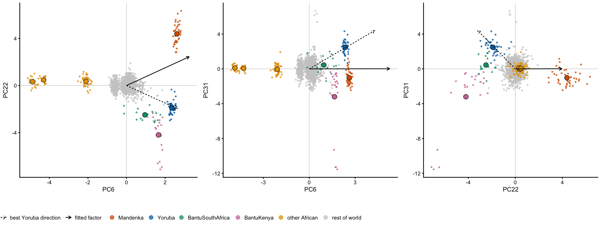
| Version | Author | Date |
|---|---|---|
| c54cd5b | Matthew Stephens | 2026-09-18 |
Three things are worth reading off this. PC6 is not “West African versus the world” — it separates the four Niger-Congo populations (positive) from Biaka, Mbuti and San (strongly negative), with the rest of the world at zero. In the PC6 planes the four Niger-Congo groups are almost on top of one another, which is the sense in which they share an ancestry component. And in the PC22–PC31 plane on the right they separate cleanly into three directions: Mandenka to the right, Yoruba up and to the left, BantuKenya down and to the left, with the rest of the world as a tight cloud at the origin. Yoruba is a corner of that cloud in its own right, not a point on a line between the other two — which is exactly why one might expect it to get its own factor.
Yoruba is cleanly the top population on the best Yoruba direction. But its objective is 0.698 against 0.849 for the fitted factor, and it is not a local maximum. Running rank-1 from five Yoruba-anchored starts, including ones on which Mandenka loads strongly negative, every one climbs to the same Mandenka-anchored optimum:
zy <- Zpop["Yoruba", ]; zm <- Zpop["Mandenka", ]; zbk <- Zpop["BantuKenya", ]
starts <- list(`Yoruba centroid` = zy,
`orthogonal to the factor` = zy - sum(zy * w_fit) * w_fit,
`Yoruba minus Mandenka` = zy - zm,
`Yoruba minus mean(M, BK)` = zy - 0.5 * (zm + zbk),
`max Yoruba margin` = v_Y)
do.call(rbind, lapply(names(starts), function(nm) {
v <- nrm(starts[[nm]]); W1 <- matrix(v, ncol = 1)
l0 <- tapply(as.vector(Z %*% v), hm$pop, mean)
for (i in 1:500) W1 <- r1_update(t(Z), W1)
v1 <- as.vector(W1); l1 <- tapply(as.vector(Z %*% v1), hm$pop, mean)
data.frame(start = nm, obj_start = round(objv(v), 3),
Mandenka_start = round(l0["Mandenka"], 2),
Yoruba_start = round(l0["Yoruba"], 2),
obj_end = round(objv(v1), 3),
Mandenka_end = round(l1["Mandenka"], 2),
Yoruba_end = round(l1["Yoruba"], 2), row.names = NULL)
})) start obj_start Mandenka_start Yoruba_start obj_end
1 Yoruba centroid 0.713 0.49 5.27 0.849
2 orthogonal to the factor 0.377 -2.53 4.59 0.849
3 Yoruba minus Mandenka -0.159 -4.48 3.25 0.849
4 Yoruba minus mean(M, BK) -0.049 -2.45 3.72 0.849
5 max Yoruba margin 0.698 0.54 5.25 0.849
Mandenka_end Yoruba_end
1 5.51 2.58
2 5.51 2.58
3 5.51 2.58
4 5.51 2.58
5 5.51 2.58Nor is it hiding behind the Mandenka factor. Deflating that direction out and running the full 1000-start search in the 39-dimensional complement produces no Yoruba maximum either — the only Niger-Congo maximum that appears is BantuKenya/BantuSouthAfrica, and with a basin of one:
Q <- qr.Q(qr(cbind(w_fit, diag(ncol(Z)))))[, 2:ncol(Z)]
Zd <- Z %*% Q
set.seed(1)
Wd <- matrix(rnorm((ncol(Z) - 1) * 1000), ncol(Z) - 1, 1000)
Wd <- sweep(Wd, 2, sqrt(colSums(Wd^2)), "/")
for (i in 1:500) Wd <- r1_update(t(Zd), Wd)
Ld <- Zd %*% Wd
cld <- cutree(hclust(as.dist(1 - cor(Ld)), method = "complete"), h = 0.05)
jd <- match(unique(cld), cld); Md <- Ld[, jd, drop = FALSE]
labd <- apply(Md, 2, pop_label, m = hm)
afr <- grep("Mandenka|Yoruba|Bantu", labd)
data.frame(factor = labd[afr],
basin = as.integer(table(cld)[as.character(cld[jd])])[afr],
t(round(apply(Md[, afr, drop = FALSE], 2,
function(x) tapply(x, hm$pop, mean)[nc]), 2)),
row.names = NULL) factor basin Mandenka Yoruba BantuKenya BantuSouthAfrica
1 BantuKenya/BantuSouthAfrica 1 -0.7 0.17 6.55 2.17So the absence of a Yoruba factor is not a search failure and not a consequence of Yoruba being undifferentiated. It is that on both of the minor African axes, the largest excursion belongs to someone else:
round(Zpop[nc, c(6, 22, 31)], 2) [,1] [,2] [,3]
Mandenka 2.61 4.39 -1.02
Yoruba 2.35 -1.88 2.47
BantuKenya 1.65 -4.20 -3.21
BantuSouthAfrica 0.95 -2.49 0.44Mandenka owns the \(+\) end of PC22 at \(4.39\); BantuKenya owns the \(-\) end of PC31 at \(-3.21\). Yoruba’s own excursion, \(+2.47\) on PC31, is the smaller one, and because all four populations share the same large PC1/PC2/PC6 African component, a direction built on it cannot avoid bringing BantuSouthAfrica (3.03) up with it. The result is a shorter, broader tail — 0.698 against 0.849 — and gradient ascent walks away from it. Under \(x|x|\) the biggest excursion in a neighbourhood takes the factor, and the second-biggest gets represented as a fraction of it.
That suggests a general check: start rank-1 at each of the 54 population centroids in turn and see where it goes. This is the most targeted initialization available — if a population has a factor of its own, this should find it.
W0 <- sweep(t(Zpop), 2, sqrt(colSums(t(Zpop)^2)), "/")
obj0 <- apply(W0, 2, objv)
Wc <- W0
for (i in 1:500) Wc <- r1_update(t(Z), Wc)
Cc <- cor(Z %*% Wc, L_r1)
land <- colnames(L_r1)[apply(Cc, 1, which.max)]
lab <- r1$tab$pops[apply(Cc, 1, which.max)]
own <- mapply(function(p, l) grepl(p, l, fixed = TRUE), levels(hm$pop), lab)
c(`lands on a maximum containing itself` = sum(own),
`slides to a neighbour` = sum(!own),
`distinct endpoints` = length(unique(land)),
`endpoints that are new maxima` = sum(apply(Cc, 1, max) < 0.9))lands on a maximum containing itself slides to a neighbour
35 19
distinct endpoints endpoints that are new maxima
24 0 Thirty-two of the 54 populations reach a maximum that includes them; the other 22 slide onto a neighbour. Crucially none of the 54 finds anything new — every endpoint is one of the 25 maxima already known, at \(r = 1.00\). The populations that slide:
data.frame(population = levels(hm$pop)[!own],
obj_at_its_own_centroid = round(obj0[!own], 3),
lands_on = lab[!own],
obj_there = round(apply(Wc, 2, objv)[!own], 3),
row.names = NULL) population obj_at_its_own_centroid lands_on obj_there
1 BantuSouthAfrica 0.740 San 0.956
2 BantuKenya 0.733 Mandenka/Yoruba 0.849
3 French 0.597 Basque 0.718
4 BergamoItalian 0.473 Sardinian 0.734
5 Tuscan 0.339 Sardinian 0.734
6 Adygei 0.267 Druze 0.845
7 Uygur 0.066 Yakut/Oroqen 0.814
8 Xibo 0.398 Japanese/Hezhen/Daur+ 0.583
9 Naxi 0.293 Lahu/Dai/Cambodian+ 0.710
10 Tu 0.373 Japanese/Hezhen/Daur+ 0.583
11 Yi 0.334 Lahu/Dai/Cambodian+ 0.710
12 NorthernHan 0.385 Japanese/Hezhen/Daur+ 0.583
13 Miao 0.500 Lahu/Dai/Cambodian+ 0.710
14 Tujia 0.465 Lahu/Dai/Cambodian+ 0.710
15 Han 0.551 Lahu/Dai/Cambodian+ 0.710
16 Mongolian 0.377 Yakut/Oroqen 0.814
17 She 0.391 Lahu/Dai/Cambodian+ 0.710
18 Daur 0.367 Yakut/Oroqen 0.814
19 Hezhen 0.337 Yakut/Oroqen 0.814They are exactly the populations that sit inside the cloud rather than at a corner of it: the Han-adjacent East Asian groups collapsing onto Lahu/Dai or Japanese/Hezhen, the Italian and French groups onto Sardinian or Basque, Sindhi and Balochi onto their South Asian neighbours, Uygur onto Yakut/Oroqen, and BantuKenya onto Mandenka/Yoruba. In every case the objective rises along the way, so these are not near-misses — the centroid of such a population is not close to being a maximum at all.
Because the sources are one-sided, only the positive end of PC22 gets a factor. The negative end — Yoruba, then BantuSouthAfrica, then BantuKenya — gets nothing, so that part of their variation is simply not modelled. Both of the earlier diagnostics are reading this:
So neither is a data problem. They are the same fact seen twice: the \(x|x|\) contrast traded an interpretable ancestry axis for a sharper one-sided source, on a minor axis that whitening made cheap. It is worth knowing that this is a choice the method makes rather than a statement about African population structure, and that lowering \(K\) — or presumably using a symmetric contrast — reverses it.
The wider lesson is about what “25 maxima” means. The maxima are the largest excursions of the whitened cloud, not a partition of the populations. A population can be perfectly well separated from its neighbours — Yoruba is, on PC31 — and still get no factor, because a nearby population has a bigger excursion and the search converges there from every direction. So the count should not be read as “25 ancestries”: at \(K = 40\) the data supports 25 one-sided directions, and a population is represented in its own right only if it wins its local neighbourhood, not merely if it is distinguishable.
The 6 kb spacing was chosen to put the SNP count in the same range as the 185k of the 1000 Genomes matrix, not from any argument about LD, so it is worth knowing whether it matters. The whole pipeline was also run at 12 kb, which gives 140,628 SNPs against 215,468 — a factor of 1.53 — and output/hgdp_fastica_12kb.rds holds the maxima from that run.
alt <- readRDS("../output/hgdp_fastica_12kb.rds")
hm_alt <- hap_meta(alt$hap_ids)
c(`6kb` = fit$nsnp, `12kb` = alt$nsnp) 6kb 12kb
215468 140628 The eigenvalues agree to three decimals once scaled by \(\sqrt{p}\), so the extra SNPs are not changing the subspace fastICA works in:
round(rbind(`6kb` = fit$d[1:12] / sqrt(fit$nsnp),
`12kb` = alt$d[1:12] / sqrt(alt$nsnp)), 3) [,1] [,2] [,3] [,4] [,5] [,6] [,7] [,8] [,9] [,10] [,11] [,12]
6kb 2.982 2.613 1.542 1.297 0.913 0.841 0.726 0.656 0.643 0.618 0.608 0.595
12kb 2.991 2.633 1.553 1.300 0.916 0.844 0.730 0.662 0.647 0.622 0.613 0.596Matching the maxima across the two densities:
alt_o <- pop_order_of(alt$maxima$L, hm_alt)
L_alt <- alt$maxima$L[, alt_o, drop = FALSE]
Cd <- cor(L_r1, L_alt)
data.frame(`6kb` = r1$tab$pops,
starts_6 = r1$tab$rand_starts,
`12kb` = apply(L_alt, 2, pop_label, m = hm_alt)[apply(Cd, 1, which.max)],
starts_12 = alt$maxima$n_random[alt_o][apply(Cd, 1, which.max)],
r = round(apply(Cd, 1, max), 3),
check.names = FALSE, row.names = NULL) 6kb starts_6 12kb
1 Mandenka/Yoruba 5 Mandenka/Yoruba/BantuSouthAfrica+
2 Biaka 47 Biaka
3 San 205 San
4 Mbuti 127 Mbuti
5 Mozabite 18 Mozabite
6 Bedouin 14 Bedouin
7 Bedouin 5 Bedouin
8 Druze 8 Druze
9 Palestinian 3 Palestinian
10 Basque 0 Basque
11 Sardinian 0 Sardinian
12 Russian/Orcadian/French+ 0 Russian/Orcadian/French+
13 Brahui/Makrani/Balochi+ 0 Brahui/Makrani/Balochi+
14 Hazara 0 Mozabite
15 Kalash 34 Kalash
16 Burusho/Pathan/Sindhi 0 Burusho/Pathan/Sindhi
17 Lahu/Dai/Cambodian+ 0 Lahu/Dai/Cambodian+
18 Japanese/Hezhen/Daur+ 0 Japanese/Hezhen/Daur+
19 Yakut/Oroqen 1 Yakut/Oroqen
20 PapuanHighlands/PapuanSepik 89 PapuanHighlands/PapuanSepik
21 Bougainville 116 Bougainville
22 Pima 55 Pima
23 Colombian/Maya 6 Colombian/Maya
24 Karitiana 114 Karitiana
25 Surui 153 Surui
starts_12 r
1 6 0.985
2 37 0.998
3 232 0.997
4 117 0.998
5 12 0.996
6 20 0.996
7 0 0.980
8 8 0.994
9 0 0.987
10 0 0.985
11 1 0.989
12 0 0.993
13 0 0.993
14 12 0.021
15 19 0.998
16 0 0.988
17 0 0.993
18 0 0.991
19 2 0.996
20 105 0.999
21 95 0.998
22 59 0.997
23 9 0.996
24 111 0.998
25 167 0.997c(n_6kb = ncol(L_r1), n_12kb = ncol(L_alt),
matched_r_gt_0.9 = sum(apply(Cd, 2, max) > 0.9),
worst_matched_r = round(min(apply(Cd, 2, max)), 3)) n_6kb n_12kb matched_r_gt_0.9 worst_matched_r
25.00 24.00 24.00 0.98 Every one of the 24 maxima found at 12 kb reappears at 6 kb, the worst match being \(r =\) 0.98, and the basin sizes track closely:
j <- apply(Cd, 1, which.max)
ok <- apply(Cd, 1, max) > 0.9
db <- data.frame(six = r1$tab$rand_starts[ok],
twelve = alt$maxima$n_random[alt_o][j][ok])
ggplot(db, aes(twelve, six)) +
geom_abline(slope = 1, linetype = "dashed", colour = "grey60") +
geom_point(size = 1.4) +
labs(x = "random starts, 12 kb", y = "random starts, 6 kb") +
theme_cowplot(font_size = 10)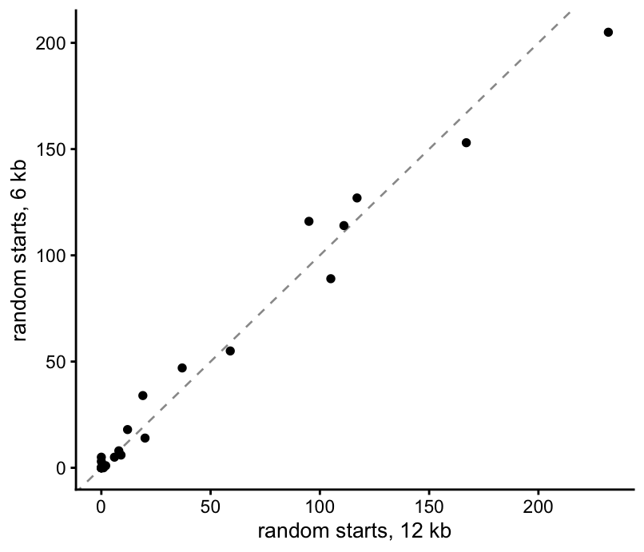
| Version | Author | Date |
|---|---|---|
| c54cd5b | Matthew Stephens | 2026-09-18 |
round(cor(db$twelve, db$six), 3)[1] 0.989The one difference is that 6 kb finds 1 maximum that 12 kb does not, and it is not new population structure: it is the Hazara cluster, one of the within-population groups the pruning check identifies. At 12 kb that cluster is present too, but only as a rank-\(r\) factor — rank-1 started there converges to it, while no random start does. With more SNPs it becomes a genuine rank-1 maximum with a basin of its own. The same marginal wobble shows up in the pruning check: the two densities agree on 26 of the individuals to drop, and disagree on a Palestinian cluster of four that is a narrow rank-\(r\) factor at 12 kb and not at 6 kb.
c(dropped_6kb = length(pc$dropped), dropped_12kb = length(alt$pruned$dropped),
in_both = length(intersect(pc$dropped, alt$pruned$dropped)),
only_6kb = length(setdiff(pc$dropped, alt$pruned$dropped)),
only_12kb = length(setdiff(alt$pruned$dropped, pc$dropped))) dropped_6kb dropped_12kb in_both only_6kb only_12kb
27 30 26 1 4 meta[match(setdiff(alt$pruned$dropped, pc$dropped), meta$sample), c("sample", "pop")] sample pop
616 HGDP00732 Palestinian
641 HGDP00678 Palestinian
665 HGDP00735 Palestinian
671 HGDP00690 PalestinianSo the SNP count is not what is limiting this analysis. Between 140k and 215k SNPs the subspace, the maxima, their objectives and their basins are all stable to two or three decimals, and the only things that move are the marginal nuisance factors, which are recognizable in either case. That is reassuring about the 6 kb choice but it is a narrow check — it says the answer is stable to how many SNPs are taken, not that distance thinning is picking a good set.
The recipe from the 1000 Genomes analysis transfers, but the thing it was built to fix is largely absent here. There, dropping 40 of 2504 individuals turned a landscape with 17 maxima, wildly uneven basins and three maxima that random starts could never reach into one with 14 maxima, all population factors. Here the landscape is already almost all population factors: 23 of the 25 maxima are populations or groups of neighbouring populations with no pruning at all, and removing the 27 individuals behind the other two changes nothing else. So the analysis does not prune.
Four checks come out the same way, which is the main thing to take from this. The maxima do not depend on the whitening dimension (identical at \(K = 40\) and \(K = 60\), worst match \(r = 0.94\)), they do not depend on the SNP density (every 12 kb maximum reappears at 6 kb, worst \(r = 0.98\), basin sizes correlated at 0.99), they do not depend on the 27 individuals the pruning check removes, and 18 of the 25 are found independently by each half of the chromosomes, matching each other at \(r\) up to 0.99 with basin sizes again correlated at 0.99. Whatever else they are, they are not artifacts of those choices.
The stability split also sharpens what the seven non-replicating maxima are. Both halves lose exactly the same seven, which is itself informative: Basque, Sardinian and Russian/Orcadian/French merge into a broad European factor, Japanese/Hezhen and Colombian/Maya are not resolved at all, and the Bedouin and Hazara clusters — the two the pruning check flags as within-population — are the least reproducible things in the analysis. The finer population splits are real but need the full marker set; the two nuisance factors are called out by the split and by the pruning check independently.
The rank-\(r\) fits behave quite differently, and consistently worse. They are the only route to 8 of the maxima — so they are still needed — but as a factorization in their own right they fail on both counts we can check: \(B\) goes 5.6% negative at \(K = 40\) and 8.3% at \(K = 60\), against essentially zero for the maxima, and the 25 maxima capture more of the data after taking positive parts (\(R^2 = 0.585\)) than 60 rank-\(r\) factors do (\(0.569\)). At \(K = 60\) only 19 of the 60 factors correspond to a maximum; the other 41 are diffuse, low-objective directions (median objective 0.27 against 0.82 for the 19) that exist because orthogonality requires 60 components to be produced. Raising \(K\) from 40 to 60 buys a higher objective and 20 more of those, and no new structure.
Running the same search on the residual of the non-negative fit closes this off. The 25 sources take out 89% of the centred variance; of what is left, 57% sits in a single direction that correlates at \(-0.98\) with the structure-plot bar heights — it is the model failing on admixed individuals, not structure it missed — and the 1000 rank-1 starts find only four low-objective maxima, none of them a new population. That is a statement about the non-negative representation rather than about the ICA fit, since the residual is defined by throwing away the negative parts of the sources, but within that scope nothing source-like is left behind.
One methodological point worth keeping even though the pruning was dropped. The count-based sparsity rule from the TGP script measures the wrong thing once populations can be smaller than the threshold: applied unchanged to HGDP it deletes San, Colombian and Surui, three real populations with three of the highest objectives in the fit. Nothing in the output would flag it — the fit converges just as cleanly and still reports a tidy list of population factors, with three populations quietly missing. Testing sparsity relative to the size of the population involved is a one-line change and fixes it.
sessionInfo()R version 4.4.2 (2024-10-31)
Platform: aarch64-apple-darwin20
Running under: macOS 26.5.2
Matrix products: default
BLAS: /System/Library/Frameworks/Accelerate.framework/Versions/A/Frameworks/vecLib.framework/Versions/A/libBLAS.dylib
LAPACK: /Library/Frameworks/R.framework/Versions/4.4-arm64/Resources/lib/libRlapack.dylib; LAPACK version 3.12.0
locale:
[1] C
time zone: America/Chicago
tzcode source: internal
attached base packages:
[1] stats graphics grDevices utils datasets methods base
other attached packages:
[1] fastTopics_0.7-38 cowplot_1.2.0 ggplot2_4.0.2
loaded via a namespace (and not attached):
[1] gtable_0.3.6 xfun_0.56 bslib_0.10.0
[4] htmlwidgets_1.6.4 ggrepel_0.9.6 lattice_0.22-9
[7] quadprog_1.5-8 vctrs_0.7.2 tools_4.4.2
[10] generics_0.1.4 parallel_4.4.2 Polychrome_1.5.4
[13] tibble_3.3.1 pkgconfig_2.0.3 Matrix_1.7-4
[16] data.table_1.18.2.1 SQUAREM_2026.1 RColorBrewer_1.1-3
[19] S7_0.2.1 scatterplot3d_0.3-44 RcppParallel_5.1.11-1
[22] lifecycle_1.0.5 truncnorm_1.0-9 compiler_4.4.2
[25] farver_2.1.2 stringr_1.6.0 git2r_0.36.2
[28] progress_1.2.3 RhpcBLASctl_0.23-42 httpuv_1.6.16
[31] htmltools_0.5.9 sass_0.4.10 yaml_2.3.12
[34] lazyeval_0.2.2 plotly_4.12.0 crayon_1.5.3
[37] later_1.4.6 pillar_1.11.1 jquerylib_0.1.4
[40] whisker_0.4.1 tidyr_1.3.2 uwot_0.2.4
[43] cachem_1.1.0 gtools_3.9.5 tidyselect_1.2.1
[46] digest_0.6.39 Rtsne_0.17 stringi_1.8.7
[49] reshape2_1.4.5 dplyr_1.2.0 purrr_1.2.1
[52] ashr_2.2-69 labeling_0.4.3 rprojroot_2.1.1
[55] fastmap_1.2.0 grid_4.4.2 colorspace_2.1-2
[58] cli_3.6.5 invgamma_1.2 magrittr_2.0.4
[61] withr_3.0.2 prettyunits_1.2.0 scales_1.4.0
[64] promises_1.5.0 rmarkdown_2.30 httr_1.4.8
[67] otel_0.2.0 workflowr_1.7.2 hms_1.1.4
[70] pbapply_1.7-4 evaluate_1.0.5 knitr_1.51
[73] irlba_2.3.7 viridisLite_0.4.3 rlang_1.1.7
[76] Rcpp_1.1.1 mixsqp_0.3-54 glue_1.8.0
[79] jsonlite_2.0.0 plyr_1.8.9 R6_2.6.1
[82] fs_1.6.6